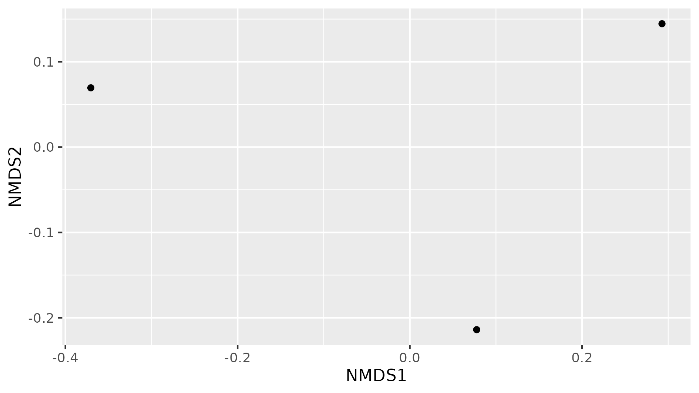

Content from Starting a Metagenomics Project
Last updated on 2025-04-06 | Edit this page
Overview
Questions
- How do you plan a metagenomics experiment?
- How does a metagenomics project look like?
Objectives
- Learn the differences between shotgun and metabarcoding (amplicon metagenomics) techniques.
- Understand the importance of metadata.
- Familiarize yourself with the Cuatro Ciénegas experiment.
Metagenomics
Metagenomes are collections of genomic sequences from various (micro)organisms that coexist in any given space. They are like snapshots that can give us information about the taxonomic and even metabolic or functional composition of the communities we decide to study. Thus, metagenomes are usually employed to investigate the ecology of defining characteristics of niches (* e.g.,*, the human gut or the ocean floor).
Since metagenomes are mixtures of sequences that belong to different species, a metagenomic workflow is designed to answer two questions:
- What species are represented in the sample?
- What are they capable of doing?
To find which species are present in a niche, we must do a taxonomic assignation of the obtained sequences. To find out their capabilities, we can look at the genes directly encoded in the metagenome or find the genes associated with the species that we found. In order to know which methodology we should use, it is essential to know what questions we want to answer.
Shotgun and amplicon
There are two paths to obtain information from a complex sample:
- Shotgun Metagenomics
- Metabarcoding.
Each is named after the sequencing methodology employed Moreover, have particular use cases with inherent advantages and disadvantages.
With Shotgun Metagenomics, we sequence random parts (ideally all of them) of the genomes present in a sample. We can search the origin of these pieces (i.e., their taxonomy) and also try to find to what part of the genome they correspond. Given enough pieces, it is possible to obtain complete individual genomes from a shotgun metagenome (MAGs), which could give us a bunch of information about the species in our study. MAGs assembly, however, requires a lot of genomic sequences from one organism. Since the sequencing is done at random, it needs a high depth of community sequencing to ensure that we obtain enough pieces of a given genome. Required depth gets exponentially challenging when our species of interest is not very abundant. It also requires that we have enough DNA to work with, which can be challenging to obtain in some instances. Finally, sequencing is expensive, and because of this, making technical and biological replicates can be prohibitively costly.
On the contrary, Metabarcoding tends to be cheaper, which makes it easier to duplicate and even triplicate them without taking a big financial hit. The lower cost is because Metabarcoding is the collection of small genomic fragments present in the community and amplified through PCR. Ideally, if the amplified region is present only once in every genome, we would not need to sequence the amplicon metagenome so thoroughly because one sequence is all we need to get the information about that genome, and by extension, about that species. On the other hand, if a genome in the community lacks the region targeted by the PCR primers, then no amount of sequencing can give us information about that genome. Conservation across species is why the most popular amplicon used for this methodology are 16S amplicons for Bacteria since every known bacterium has this particular region. Other regions can be chosen, but they are used for specific cases. However, even 16S amplicons are limited to, well, the 16S region, so amplicon metagenomes cannot directly tell us a lot about the metabolic functions found in each genome, although educated guesses can be made by knowing which genes are commonly found in every identified species.

On Metadata
Once we have chosen an adequate methodology for our study, we must take extensive notes on the origin of our samples and how we treated them. These notes constitute the metadata, or data about our data, and they are crucial to understanding and interpreting the results we will obtain later in our metagenomic analysis. Most of the time, the differences that we observe when comparing metagenomes can be correlated to the metadata, which is why we must devote a whole section of our experimental design to the metadata we expect to collect and record carefully.
Discussion #1: Choosing amplicon or shotgun sequencing?
Suppose you want to find the source of a nasty gut infection in
people. Which type of sequencing methodology would you choose?
Which type of metadata would be helpful to record?
For a first exploration, 16S is a better idea since you could detect known pathogens by knowing the taxons in the community. Nevertheless, if the disease is the consequence of a viral infection, the pathogen can only be discovered with shotgun metagenomics (that was the case of SARS-CoV 2). Also, metabarcoding does not provide insights into the genetic basis of the pathogenic phenotypes. Metadata will depend on the type of experiment. For this case, some helpful metadata could be sampling methodology, date, place (country, state, region, city, etc.), patient’s sex and age, the anatomical origin of the sample, symptoms, medical history, diet, lifestyle, and environment.
Cuatro Ciénegas

During this lesson, we will work with actual metagenomic information, so we should be familiarized with it. The metagenomes that we will use were collected in Cuatro Ciénegas, a region that has been extensively studied by Valeria Souza. Cuatro Ciénegas is an oasis in the Mexican desert whose environmental conditions are often linked to the ones present in ancient seas, due to a higher-than-average content of sulfur and magnesium but a lower concentrations of phosphorus and other nutrients. Because of these particular conditions, the Cuatro Ciénegas basin is a fascinating place to conduct a metagenomic study to learn more about the bacterial diversity that is capable to survive and thrive in that environment.
The particular metagenomic study that we are going to work with was collected in a study about the response of the Cuatro Cienegas’ bacterial community to nutrient enrichment. In this study, authors compared the differences between the microbial community in its natural, oligotrophic, phosphorus-deficient environment, a pond from the Cuatro Ciénegas Basin (CCB), and the same microbial community under a fertilization treatment. The comparison between bacterial communities showed that many genomic traits, such as mean bacterial genome size, GC content, total number of tRNA genes, total number of rRNA genes, and codon usage bias were significantly changed when the bacterial community underwent the treatment.
Exercise 1: Reviewing metadata
According to the results described for this CCB study.
- What kind of sequencing method do you think they used, and why do
you think so?
- Metabarcoding
- Shotgun metagenomics
- Genomics of axenic cultures
- In the table samples treatment information, what was the most critical piece of metadata that the authors took?
- Metabarcoding. False. With this technique, usually, only one region
of the genome is amplified.
- Shotgun Metagenomics. True. Only shotgun metagenomics could have
been used to investigate the total number of tRNA genes.
- Genomics of axenic cultures. False. Information on the microbial community cannot be fully obtained with axenic cultures.
The most crucial thing to know about our data is which community was
and was not supplemented with fertilizers.
However, any differences in the technical parts of the study, such as
the DNA extraction protocol, could have affected the results, so
tracking those is also essential.
Exercise 2: Differentiate between IDs and sample names
Depending on the database, several IDs can be used for the same sample. Please open the document where the metadata information is stored. Here, inspect the IDs and find out which of them correspond to sample JP4110514WATERRESIZE
ERS1949771 is the SRA ID corresponding to JP4110514WATERRESIZE
Exercise 3: Discuss the importance of metadata
Which other information could you recommend to add in the metadata?
Metadata will depend on the type of the experiment, but some examples are the properties of the water before and after fertilization, sampling, and processing methodology, date and time, place (country, state, region, city, etc.).
Throughout the lesson, we will use the first four characters of the
File names (alias) to identify the data files corresponding
to a sample. We are going to use the first two sapmples for most of the
lesson and the third one for one exercise at the end.
| SRA Accession | File name (alias) | Sample name in the lesson | Treatment |
|---|---|---|---|
| ERS1949784 | JC1ASEDIMENT120627 | JC1A | Control mesocosm |
| ERS1949801 | JP4DASH2120627WATERAMPRESIZED | JP4D | Fertilized pond |
| ERS1949771 | JP4110514WATERRESIZE | JP41 | Unenriched pond |
The results of this study, raw sequences, and metadata have been submitted to the NCBI Sequence Read Archive (SRA) and stored in the BioProject PRJEB22811.
Other metagenomic databases
The NCBI SRA is not the only repository for metagenomic information. There are other public metagenomic databases such as MG-RAST, MGnify, Marine Metagenomics Portal, Terrestrial Metagenome DB and the GM Repo.
Each database requires certain metadata linked with the data. As an
example, when JP4D.fasta is uploaded to mg-RAST the
associated metadata looks like this:
| Column | Description |
|---|---|
| file_name | JP4D.fasta |
| investigation_type | metagenome |
| seq_meth | Illumina |
| project_description | This project is a teaching project and uses data from Okie et al. Elife 2020 |
| collection_date | 2012-06-27 |
| country | Mexico |
| feature | pond water |
| latitude | 26.8717055555556 |
| longitude | -102.14 |
| env_package | water |
| depth | 0.165 |
Key Points
- Shotgun metagenomics can be used for taxonomic and functional studies.
- Metabarcoding can be used for taxonomic studies.
- Collecting metadata beforehand is fundamental for downstream analysis.
- We will use data from a Cuatro Ciénegas project to learn about shotgun metagenomics.
Content from Assessing Read Quality
Last updated on 2025-04-06 | Edit this page
Overview
Questions
- How can I describe the quality of my data?
Objectives
- Explain how a FASTQ file encodes per-base quality scores.
- Interpret a FastQC plot summarizing per-base quality across all reads.
- Use
forloops to automate operations on multiple files.
Bioinformatic workflows
When working with high-throughput sequencing data, the raw reads you get off the sequencer must pass through several different tools to generate your final desired output. The execution of this set of tools in a specified order is commonly referred to as a workflow or a pipeline.
An example of the workflow we will be using for our analysis is provided below, with a brief description of each step.

- Quality control - Assessing quality using FastQC and Trimming and/or filtering reads (if necessary)
- Assembly of metagenome
- Binning
- Taxonomic assignation
These workflows in bioinformatics adopt a plug-and-play approach in
that the output of one tool can be easily used as input to another tool
without any extensive configuration. Having standards for data formats
is what makes this feasible. Standards ensure that data is stored in a
way that is generally accepted and agreed upon within the community.
Therefore, the tools used to analyze data at different workflow stages
are
built, assuming that the data will be provided in a specific format.
Quality control
We will now assess the quality of the sequence reads contained in our FASTQ files.
{kind=link}
Details on the FASTQ format
Although it looks complicated (and it is), we can understand the FASTQ format with a little decoding. Some rules about the format include the following:
| Line | Description |
|---|---|
| 1 | Always begins with ‘@’ followed by the information about the read |
| 2 | The actual DNA sequence |
| 3 | Always begins with a ‘+’ and sometimes contains the same info as in line 1 |
| 4 | Has a string of characters which represent the quality scores; must have same number of characters as line 2 |
We can view the first complete read in one of the files from our
dataset using head to look at the first four lines. But we
have to decompress one of the files first.
OUTPUT
@MISEQ-LAB244-W7:156:000000000-A80CV:1:1101:12622:2006 1:N:0:CTCAGA
CCCGTTCCTCGGGCGTGCAGTCGGGCTTGCGGTCTGCCATGTCGTGTTCGGCGTCGGTGGTGCCGATCAGGGTGAAATCCGTCTCGTAGGGGATCGCGAAGATGATCCGCCCGTCCGTGCCCTGAAAGAAATAGCACTTGTCAGATCGGAAGAGCACACGTCTGAACTCCAGTCACCTCAGAATCTCGTATGCCGTCTTCTGCTTGAAAAAAAAAAAAGCAAACCTCTCACTCCCTCTACTCTACTCCCTT
+
A>>1AFC>DD111A0E0001BGEC0AEGCCGEGGFHGHHGHGHHGGHHHGGGGGGGGGGGGGHHGEGGGHHHHGHHGHHHGGHHHHGGGGGGGGGGGGGGGGHHHHHHHGGGGGGGGHGGHHHHHHHHGFHHFFGHHHHHGGGGGGGGGGGGGGGGGGGGGGGGGGGGFFFFFFFFFFFFFFFFFFFFFBFFFF@F@FFFFFFFFFFBBFF?@;@#################################### Line 4 shows the quality of each nucleotide in the read. Quality is interpreted as the probability of an incorrect base call (e.g., 1 in 10) or, equivalently, the base call accuracy (e.g., 90%). Each nucleotide’s numerical score’s value is converted into a character code where every single character represents a quality score for an individual nucleotide. This conversion allows the alignment of each individual nucleotide with its quality score. For example, in the line above, the quality score line is:
OUTPUT
A>>1AFC>DD111A0E0001BGEC0AEGCCGEGGFHGHHGHGHHGGHHHGGGGGGGGGGGGGHHGEGGGHHHHGHHGHHHGGHHHHGGGGGGGGGGGGGGGGHHHHHHHGGGGGGGGHGGHHHHHHHHGFHHFFGHHHHHGGGGGGGGGGGGGGGGGGGGGGGGGGGGFFFFFFFFFFFFFFFFFFFFFBFFFF@F@FFFFFFFFFFBBFF?@;@#################################### The numerical value assigned to each character depends on the sequencing platform that generated the reads. The sequencing machine used to generate our data uses the standard Sanger quality PHRED score encoding, using Illumina version 1.8 onwards. Each character is assigned a quality score between 0 and 41, as shown in the chart below.
OUTPUT
Quality encoding: !"#$%&'()*+,-./0123456789:;<=>?@ABCDEFGHIJ
| | | | |
Quality score: 01........11........21........31........41 Each quality score represents the probability that the corresponding nucleotide call is incorrect. These probability values are the results of the base calling algorithm and depend on how much signal was captured for the base incorporation. This quality score is logarithmically based, so a quality score of 10 reflects a base call accuracy of 90%, but a quality score of 20 reflects a base call accuracy of 99%. In this link you can find more information about quality scores.
Looking back at our read:
OUTPUT
@MISEQ-LAB244-W7:156:000000000-A80CV:1:1101:12622:2006 1:N:0:CTCAGA
CCCGTTCCTCGGGCGTGCAGTCGGGCTTGCGGTCTGCCATGTCGTGTTCGGCGTCGGTGGTGCCGATCAGGGTGAAATCCGTCTCGTAGGGGATCGCGAAGATGATCCGCCCGTCCGTGCCCTGAAAGAAATAGCACTTGTCAGATCGGAAGAGCACACGTCTGAACTCCAGTCACCTCAGAATCTCGTATGCCGTCTTCTGCTTGAAAAAAAAAAAAGCAAACCTCTCACTCCCTCTACTCTACTCCCTT
+
A>>1AFC>DD111A0E0001BGEC0AEGCCGEGGFHGHHGHGHHGGHHHGGGGGGGGGGGGGHHGEGGGHHHHGHHGHHHGGHHHHGGGGGGGGGGGGGGGGHHHHHHHGGGGGGGGHGGHHHHHHHHGFHHFFGHHHHHGGGGGGGGGGGGGGGGGGGGGGGGGGGGFFFFFFFFFFFFFFFFFFFFFBFFFF@F@FFFFFFFFFFBBFF?@;@#################################### We can now see that there is a range of quality scores but that the
end of the sequence is very poor (# = a quality score of
2).
Exercise 1: Looking at specific reads
In the terminal, how would you show the ID and quality of the last
read JP4D_R1.fastq?
a) tail JP4D_R1.fastq
b) head -n 4 JP4D_R1.fastq
c) more JP4D_R1.fastq
d) tail -n4 JP4D_R1.fastq
e) tail -n4 JP4D_R1.fastq | head -n2
Do you trust the sequence in this read?
BASH
a) It shows the ID and quality of the last read but also unnecessary lines from previous reads.
b) No. It shows the first read's info.
c) It shows the text of the entire file.
d) This option is the best answer as it only shows the last read's information.
e) It does show the ID of the last read but not the quality. OUTPUT
@MISEQ-LAB244-W7:156:000000000-A80CV:1:2114:17866:28868 1:N:0:CTCAGA
CCCGTTCTCCACCTCGGCGCGCGCCAGCTGCGGCTCGTCCTTCCACAGGAACTTCCACGTCGCCGTCAGCCGCGACACGTTCTCCCCCCTCGCATGCTCGTCCTGTCTCTCGTGCTTGGCCGACGCCTGCGCCTCGCACTGCGCCCGCTCGGTGTCGTTCATGTTGATCTTCACCGTGGCGTGCATGAAGCGGTTCCCGGCCTCGTCGCCACCCACGCCATCCGCGTCGGCCAGCCACTCTCACTGCTCGC
+
AA11AC1>3@DC1F1111000A0/A///BB############################################################################################################################################################################################################################# This read has more consistent quality at its first than at the end but still has a range of quality scores, most of them are low. We will look at variations in position-based quality in just a moment.
In real life, you won’t be assessing the quality of your reads by visually inspecting your FASTQ files. Instead, you’ll use a software program to assess read quality and filter out poor reads. We’ll first use a program called FastQC to visualize the quality of our reads. Later in our workflow, we’ll use another program to filter out poor-quality reads.
First, let’s make available our metagenomics software:
Activating an environment
Environments are part of a bioinformatic tendency to do reproducible research; they are a way to share and maintain our programs in their needed versions used for a pipeline with our colleagues and our future self. FastQC has not been activated in the (base) environment, but this AWS instance came with an environment called metagenomics. We need to activate it in order to start using FastQC.
We will use Conda as
our environment manager. Conda is an open-source package and environment
management system that runs on Windows, macOS and Linux. Conda
environments are activated with the conda activate
direction:
After the environment has been activated, a label is shown before the
$ sign.
OUTPUT
(metagenomics) $Now, if we call FastQC, a long help page will be displayed on our screen.
OUTPUT
FastQC - A high throughput sequence QC analysis tool
SYNOPSIS
fastqc seqfile1 seqfile2 .. seqfileN
fastqc [-o output dir] [--(no)extract] [-f fastq|bam|sam]
[-c contaminant file] seqfile1 .. seqfileN
DESCRIPTION
FastQC reads a set of sequence files and produces from each one a quality
control report consisting of many different modules, each one of
which will help to identify a different potential type of problem in your
data.
.
.
.If FastQC is not installed, then you would expect to see an error like
ERROR
The program 'fastqc' is currently not installed. You can install it by typing:
sudo apt-get install fastqcIf this happens, check with your instructor before trying to install it.
Assessing quality using FastQC
FastQC has several features that can give you a quick impression of any problems your data may have, so you can consider these issues before moving forward with your analyses. Rather than looking at quality scores for each read, FastQC looks at quality collectively across all reads within a sample. The image below shows one FastQC-generated plot that indicates a very high-quality sample:

The x-axis displays the base position in the read, and the y-axis shows quality scores. In this example, the sample contains reads that are 40 bp long. This length is much shorter than the reads we are working on within our workflow. For each position, there is a box-and-whisker plot showing the distribution of quality scores for all reads at that position. The horizontal red line indicates the median quality score, and the yellow box shows the 1st to 3rd quartile range. This range means that 50% of reads have a quality score that falls within the range of the yellow box at that position. The whiskers show the whole range covering the lowest (0th quartile) to highest (4th quartile) values.
The quality values for each position in this sample do not drop much lower than 32, which is a high-quality score. The plot background is also color-coded to identify good (green), acceptable (yellow) and bad (red) quality scores.
Now let’s look at a quality plot on the other end of the spectrum.

The FastQC tool produces several other diagnostic plots to assess sample quality and the one plotted above. Here, we see positions within the read in which the boxes span a much more comprehensive range. Also, quality scores drop pretty low into the “bad” range, particularly on the tail end of the reads.
Running FastQC
We will now assess the quality of the reads that we downloaded.
First, make sure you’re still in the untrimmed_fastq
directory.
Exercise 2: Looking at metadata about the untrimmed-files
To know which files have more data, you need to see metadata about
untrimmed files. In files, metadata includes owners of the file, state
of the write, read, and execute permissions, size, and modification
date. Using the ls command, how would you get the size of
the files in the untrimmed_fastq\ directory?
(Hint: Look at the options for the ls command to see how to
show file sizes.)
a) ls -a
b) ls -S
c) ls -l
d) ls -lh
e) ls -ahlS
- No. The flag
-ashows all the contents, including hidden files and directories, but not the sizes.
- No. The flag
-Sshows the content Sorted by size, starting with the most extensive file, but not the sizes.
- Yes. The flag
-lshows the contents with metadata, including file size. Other metadata are permissions, owners, and modification dates.
- Yes. The flag
-lhshows the content with metadata in a human-readable manner.
- Yes. The combination of all the flags shows all the contents with metadata, including hidden files, sorted by size.
OUTPUT
-rw-r--r-- 1 dcuser dcuser 24M Nov 26 21:34 JC1A_R1.fastq.gz
-rw-r--r-- 1 dcuser dcuser 24M Nov 26 21:34 JC1A_R2.fastq.gz
-rw-r--r-- 1 dcuser dcuser 616M Nov 26 21:34 JP4D_R1.fastq
-rw-r--r-- 1 dcuser dcuser 203M Nov 26 21:35 JP4D_R2.fastq.gz Four FASTQ files oscillate between 24M (24MB) to 616M. The largest file is JP4D_R1.fastq with 616M.
FastQC can accept multiple file names as input, and on both zipped
and unzipped files, so we can use the \*.fastq*wildcard to
run FastQC on all FASTQ files in this directory.
You will see an automatically updating output message telling you the progress of the analysis. It will start like this:
OUTPUT
Started analysis of JC1A_R1.fastq.gz
Approx 5% complete for JC1A_R1.fastq.gz
Approx 10% complete for JC1A_R1.fastq.gz
Approx 15% complete for JC1A_R1.fastq.gz
Approx 20% complete for JC1A_R1.fastq.gz
Approx 25% complete for JC1A_R1.fastq.gz
Approx 30% complete for JC1A_R1.fastq.gz
Approx 35% complete for JC1A_R1.fastq.gz It should take around five minutes for FastQC to run on all four of our FASTQ files. When the analysis completes, your prompt will return. So your screen will look something like this:
OUTPUT
Approx 80% complete for JP4D_R2.fastq.gz
Approx 85% complete for JP4D_R2.fastq.gz
Approx 90% complete for JP4D_R2.fastq.gz
Approx 95% complete for JP4D_R2.fastq.gz
Analysis complete for JP4D_R2.fastq.gz
$The FastQC program has created several new files within our
data/untrimmed_fastq/ directory.
OUTPUT
JC1A_R1_fastqc.html JC1A_R2_fastqc.html JP4D_R1.fastq JP4D_R2_fastqc.html TruSeq3-PE.fa
JC1A_R1_fastqc.zip JC1A_R2_fastqc.zip JP4D_R1_fastqc.html JP4D_R2_fastqc.zip
JC1A_R1.fastq.gz JC1A_R2.fastq.gz JP4D_R1_fastqc.zip JP4D_R2.fastq.gz For each input FASTQ file, FastQC has created a .zip
file and a .html file. The .zip file extension
indicates that this is a compressed set of multiple output files. We’ll
be working with these output files soon. The .html file is
a stable webpage displaying the summary report for each of our
samples.
We want to keep our data files and our results files separate, so we
will move these output files into a new directory within our
results/ directory.
BASH
$ mkdir -p ~/dc_workshop/results/fastqc_untrimmed_reads
$ mv *.zip ~/dc_workshop/results/fastqc_untrimmed_reads/
$ mv *.html ~/dc_workshop/results/fastqc_untrimmed_reads/ Now we can navigate into this results directory and do some closer inspection of our output files.
Viewing the FastQC results
If we were working on our local computers, we’d be able to look at each of these HTML files by opening them in a web browser. However, these files are currently sitting on our remote AWS instance, where our local computer can’t see them. If we are working with the terminal provided by r-studio we can either: select the html files and with the secondary click chose the option open in a browser or export the files to our local computer as we learned in the Introduction to the Command Line lesson.
Exercise 3: Downloading files by scp (optional)
Suppose you only have access to a terminal and there is not a web
browser available at the AWS remote machine. The following are the steps
needed to download your files to your computer. Observe the third step
and answer false/true for each question about the scp
command.
- Open a new terminal on your local computer.
- Make a new local directory on our computer to store the HTML files
$ mkdir -p ~/Desktop/fastqc_html - Transfer our HTML files to our local computer using
scp.$ scp dcuser@ec2-34-238-162-94.compute-1.amazonaws.com:~/dc_workshop/results/fastqc_untrimmed_reads/*.html ~/Desktop/fastqc_html
-
dcuseris your local user
-
ec2-34-238-162-94.compute-1.amazonaws.comis the address of your remote machine
- the current adress of the file goes after the second space in the
scpcommand.
-
~/dc_workshop/results/fastqc_untrimmed_reads/*.htmlis the path of the file you want to download
-
~/Desktop/fastqc_htmlis a remote path.
-
:Divides the host name of your local computer and the path of the file.
- False.
dcuseris your remote user.
- True.
ec2-34-238-162-94.compute-1.amazonaws.comis the adress of your remote machine
- False. The current adress of the file goes after the first space in
the
scpcommand.
- True.
~/dc_workshop/results/fastqc_untrimmed_reads/*.htmlis the path of the file you want to download in the remote machine. - False.
~/Desktop/fastqc_htmlis a local path where your file will be downloaded. - False.
:Divides the host name of a remote computer and the path of the file on the remote computer.
You should see a status output like this:
OUTPUT
JC1A_R1_fastqc.html 100% 253KB 320.0KB/s 00:00
JC1A_R2_fastqc.html 100% 262KB 390.1KB/s 00:00
JP4D_R1_fastqc.html 100% 237KB 360.8KB/s 00:00
JP4D_R2_fastqc.html 100% 244KB 385.2KB/s 00:00Now we can open the 4 HTML files.
Depending on your system, you should be able to select and open them all at once via a right-click menu in your file browser.
Exercise 4: Discuss the quality of sequencing files
Discuss your results with a neighbor. Which sample(s) looks the best per base sequence quality? Which sample(s) look the worst?
All of the reads contain usable data, but the quality decreases toward the end of the reads. File JC1A_R2_fastqc shows the lowest quality.
Decoding the other FastQC outputs
We’ve now looked at quite a few “Per base sequence quality” FastQC graphs, but there are nine other graphs that we haven’t talked about! Below we have provided a brief overview of interpretations for each plot. For more information, please see the FastQC documentation here
- Per tile sequence quality: the machines that perform sequencing are divided into tiles. This plot displays patterns in base quality along these tiles. Consistently low scores are often found around the edges, but hot spots could also occur in the middle if an air bubble was introduced during the run.
- Per sequence quality scores: a density plot of quality for all reads at all positions. This plot shows what quality scores are most common.
- Per base sequence content: plots the proportion of each base position over all of the reads. Typically, we expect to see each base roughly 25% of the time at each position, but this often fails at the beginning or end of the read due to quality or adapter content.
- Per sequence GC content: a density plot of average GC content in each of the reads.
- Per base N content: the percent of times that ‘N’ occurs at a position in all reads. If there is an increase at a particular position, this might indicate that something went wrong during sequencing.
- Sequence Length Distribution: the distribution of sequence lengths of all reads in the file. If the data is raw, there is often a sharp peak; however, if the reads have been trimmed, there may be a distribution of shorter lengths.
- Sequence Duplication Levels: a distribution of duplicated sequences. In sequencing, we expect most reads to only occur once. If some sequences are occurring more than once, it might indicate enrichment bias (e.g. from PCR). This might not be true if the samples are high coverage (or RNA-seq or amplicon).
- Overrepresented sequences: a list of sequences that occur more frequently than would be expected by chance.
- Adapter Content: a graph indicating where adapter sequences occur in the reads.
- K-mer Content: a graph showing any sequences which may show a positional bias within the reads.
Working with the FastQC text output
Now that we’ve looked at our HTML reports getting a feel for the
data, let’s look more closely at the other output files. Go back to the
tab in your terminal program that is connected to your AWS instance (the
tab label will start with dcuser@ip) and make sure you’re
in our results subdirectory.
OUTPUT
JC1A_R1_fastqc.html JP4D_R1_fastqc.html
JC1A_R1_fastqc.zip JP4D_R1_fastqc.zip
JC1A_R2_fastqc.html JP4D_R2_fastqc.html
JC1A_R2_fastqc.zip JP4D_R2_fastqc.zip Our .zip files are compressed files. Each contains
multiple different types of output files for a single input FASTQ file.
To view the contents of a .zip file, we can use the program
unzip to decompress these files. Let’s try doing them all
at once using a wildcard.
OUTPUT
Archive: JC1A_R1_fastqc.zip
caution: filename not matched: JC1A_R2_fastqc.zip
caution: filename not matched: JP4D_R1_fastqc.zip
caution: filename not matched: JP4D_R2_fastqc.zip This decompression didn’t work. It identified the first file and got
a warning message for the other .zip files. This is because
unzip expects to get only one zip file as input. We could
go through and unzip each file one at a time, but this is very
time-consuming and error-prone. Someday you may have 500 files to
unzip!
A more efficient way is to use a for loop like we
learned in the Command Line lesson to iterate through all of our
.zip files. Let’s see what that looks like, and then we’ll
discuss what we’re doing with each line of our loop.
In this example, the input is the four filenames (one filename for
each of our .zip files). Each time the loop iterates, it
will assign a file name to the variable filename and run
the unzip command. The first time through the loop,
$filename is JC1A_R1_fastqc.zip. The
interpreter runs the command unzip on
JC1A_R1_fastqc.zip. For the second iteration,
$filename becomes JC1A_R2_fastqc.zip. This
time, the shell runs unzip on
JC1A_R2_fastqc.zip. It then repeats this process for the
other .zip files in our directory.
When we run the for loop, you will see an output that
starts like this:
OUTPUT
Archive: JC1A_R1_fastqc.zip
creating: JC1A_R1_fastqc/
creating: JC1A_R1_fastqc/Icons/
creating: JC1A_R1_fastqc/Images/
inflating: JC1A_R1_fastqc/Icons/fastqc_icon.png
inflating: JC1A_R1_fastqc/Icons/warning.png
inflating: JC1A_R1_fastqc/Icons/error.png
inflating: JC1A_R1_fastqc/Icons/tick.png
inflating: JC1A_R1_fastqc/summary.txt
inflating: JC1A_R1_fastqc/Images/per_base_quality.png
inflating: JC1A_R1_fastqc/Images/per_tile_quality.png
inflating: JC1A_R1_fastqc/Images/per_sequence_quality.png
inflating: JC1A_R1_fastqc/Images/per_base_sequence_content.png
inflating: JC1A_R1_fastqc/Images/per_sequence_gc_content.png
inflating: JC1A_R1_fastqc/Images/per_base_n_content.png
inflating: JC1A_R1_fastqc/Images/sequence_length_distribution.png
inflating: JC1A_R1_fastqc/Images/duplication_levels.png
inflating: JC1A_R1_fastqc/Images/adapter_content.png
inflating: JC1A_R1_fastqc/fastqc_report.html
inflating: JC1A_R1_fastqc/fastqc_data.txt
inflating: JC1A_R1_fastqc/fastqc.fo The unzip program is decompressing the .zip
files and creates a new directory (with subdirectories) for each of our
samples, to store all of the different output that is produced by
FastQC. There are a lot of files here. We’re going to focus on the
summary.txt file.
If you list the files in our directory, now you will see the following:
OUTPUT
JC1A_R1_fastqc JP4D_R1_fastqc
JC1A_R1_fastqc.html JP4D_R1_fastqc.html
JC1A_R1_fastqc.zip JP4D_R1_fastqc.zip
JC1A_R2_fastqc JP4D_R2_fastqc
JC1A_R2_fastqc.html JP4D_R2_fastqc.html
JC1A_R2_fastqc.zip JP4D_R2_fastqc.zip The .html files and the uncompressed .zip
files are still present, but now we also have a new directory for each
sample. We can see that it’s a directory if we use the -F
flag for ls.
OUTPUT
JC1A_R1_fastqc/ JP4D_R1_fastqc/
JC1A_R1_fastqc.html JP4D_R1_fastqc.html
JC1A_R1_fastqc.zip JP4D_R1_fastqc.zip
JC1A_R2_fastqc/ JP4D_R2_fastqc/
JC1A_R2_fastqc.html JP4D_R2_fastqc.html
JC1A_R2_fastqc.zip JP4D_R2_fastqc.zip Let’s see what files are present within one of these output directories.
OUTPUT
fastqc_data.txt fastqc.fo fastqc_report.html Icons/ Images/ summary.txtUse less to preview the summary.txt file
for this sample.
OUTPUT
PASS Basic Statistics JC1A_R1.fastq.gz
FAIL Per base sequence quality JC1A_R1.fastq.gz
PASS Per tile sequence quality JC1A_R1.fastq.gz
PASS Per sequence quality scores JC1A_R1.fastq.gz
WARN Per base sequence content JC1A_R1.fastq.gz
FAIL Per sequence GC content JC1A_R1.fastq.gz
PASS Per base N content JC1A_R1.fastq.gz
PASS Sequence Length Distribution JC1A_R1.fastq.gz
FAIL Sequence Duplication Levels JC1A_R1.fastq.gz
PASS Overrepresented sequences JC1A_R1.fastq.gz
FAIL Adapter Content JC1A_R1.fastq.gz The summary file gives us a list of tests that FastQC ran and tells
us whether this sample passed, failed, or is borderline
(WARN). Remember, to quit from less, you must
type q.
Documenting our work
We can make a record of the results we obtained for all our samples
by concatenating all of our summary.txt files into a single
file using the cat command. We’ll call this
fastqc_summaries.txt and store it to
~/dc_workshop/docs.
Exercise 4: Quality tests
Which samples failed at least one of FastQC’s quality tests? What test(s) did those samples failed
We can get the list of all failed tests using grep.
OUTPUT
FAIL Per base sequence quality JC1A_R1.fastq.gz
FAIL Per sequence GC content JC1A_R1.fastq.gz
FAIL Sequence Duplication Levels JC1A_R1.fastq.gz
FAIL Adapter Content JC1A_R1.fastq.gz
FAIL Per base sequence quality JC1A_R2.fastq.gz
FAIL Per sequence GC content JC1A_R2.fastq.gz
FAIL Sequence Duplication Levels JC1A_R2.fastq.gz
FAIL Adapter Content JC1A_R2.fastq.gz
FAIL Per base sequence content JP4D_R1.fastq
FAIL Adapter Content JP4D_R1.fastq
FAIL Per base sequence quality JP4D_R2.fastq.gz
FAIL Per base sequence content JP4D_R2.fastq.gz
FAIL Adapter Content JP4D_R2.fastq.gzQuality of large datasets
Explore MultiQC if you want a tool that can show the quality of many samples at once.
Quality Encodings Vary
Although we’ve used a particular quality encoding system to
demonstrate the interpretation of read quality, different sequencing
machines use different encoding systems. This means that depending on
which sequencer you use to generate your data, a # may not
indicate a poor quality base call.
This mainly relates to older Solexa/Illumina data. However, it’s essential that you know which sequencing platform was used to generate your data to tell your quality control program which encoding to use. If you choose the wrong encoding, you run the risk of throwing away good reads or (even worse) not throwing away bad reads!
Bonus Exercise: Automating a quality control workflow
If you lose your FastQC analysis results. How would you do it again but faster than the first time? As we have seen in a previous lesson, making scripts for repetitive tasks is a very efficient practice during bioinformatic pipelines.
Make a new script with nano
Paste inside the commands that we used along with echo
commands that shows you how the script is running.
BASH
set -e # This will ensure that our script will exit if an error occurs
cd ~/dc_workshop/data/untrimmed_fastq/
echo "Running FastQC ..."
fastqc *.fastq*
mkdir -p ~/dc_workshop/results/fastqc_untrimmed_reads
echo "Saving FastQC results..."
mv *.zip ~/dc_workshop/results/fastqc_untrimmed_reads/
mv *.html ~/dc_workshop/results/fastqc_untrimmed_reads/
cd ~/dc_workshop/results/fastqc_untrimmed_reads/
echo "Unzipping..."
for filename in *.zip
do
unzip $filename
done
echo "Saving summary..."
mkdir -p ~/dc_workshop/docs
cat */summary.txt > ~/dc_workshop/docs/fastqc_summaries.txtIf we were to run this script, it would ask us for confirmation to redo several steps because we already did all of them. If you want to, you can run it to check that it works, but it is not necessary if you already completed every step of the previous episode.
Key Points
- It is important to know the quality of our data to make decisions in the subsequent steps.
- FastQC is a program that allows us to know the quality of FASTQ files.
-
forloops let you perform the same operations on multiple files with a single command.
Content from Trimming and Filtering
Last updated on 2025-04-06 | Edit this page
Overview
Questions
- How can we get rid of sequence data that does not meet our quality standards?
Objectives
- Clean FASTQ reads using Trimmomatic.
- Select and set multiple options for command line bioinformatic tools.
- Write
forloops with two variables.
Cleaning reads
In the last episode, we took a high-level look at the quality of each
of our samples using FastQC. We visualized per-base quality
graphs showing the distribution of the quality at each base across all
the reads from our sample. This information helps us to determine the
quality threshold we will accept, and thus, we saw information about
which samples fail which quality checks. Some of our samples failed
quite a few quality metrics used by FastQC. However, this does not mean
that our samples should be thrown out! It is common to have some quality
metrics fail, which may or may not be a problem for your downstream
application. For our workflow, we will remove some low-quality sequences
to reduce our false-positive rate due to sequencing errors.
To accomplish this, we will use a program called Trimmomatic. This useful tool filters poor quality reads and trims poor quality bases from the specified samples.
Trimmomatic options
Trimmomatic has a variety of options to accomplish its task. If we run the following command, we can see some of its options:
Which will give you the following output:
OUTPUT
Usage:
PE [-version] [-threads <threads>] [-phred33|-phred64] [-trimlog <trimLogFile>] [-summary <statsSummaryFile>] [-quiet] [-validatePairs] [-basein <inputBase> | <inputFile1> <inputFile2>] [-baseout <outputBase> | <outputFile1P> <outputFile1U> <outputFile2P> <outputFile2U>] <trimmer1>...
or:
SE [-version] [-threads <threads>] [-phred33|-phred64] [-trimlog <trimLogFile>] [-summary <statsSummaryFile>] [-quiet] <inputFile> <outputFile> <trimmer1>...
or:
-versionThis output shows that we must first specify whether we have
paired-end (PE) or single-end (SE) reads.
Next, we will specify with which flags we want to run Trimmomatic. For
example, you can specify threads to indicate the number of
processors on your computer that you want Trimmomatic to use. In most
cases, using multiple threads(processors) can help to run the trimming
faster. These flags are unnecessary, but they can give you more control
over the command. The flags are followed by positional
arguments, meaning the order in which you specify them is
essential. In paired-end mode, Trimmomatic expects the two input files
and then the names of the output files. These files are described below.
While in single-end mode, Trimmomatic will expect one file as input,
after which you can enter the optional settings and, lastly, the name of
the output file.
| Option | Meaning |
|---|---|
| <inputFile1> | input forward reads to be trimmed. Typically the file name will
contain an _1 or _R1 in the name. |
| <inputFile2> | Input reverse reads to be trimmed. Typically the file name will
contain an _2 or _R2 in the name. |
| <outputFile1P> | Output file that contains surviving pairs from the _1
file. |
| <outputFile1U> | Output file that contains orphaned reads from the _1
file. |
| <outputFile2P> | Output file that contains surviving pairs from the _2
file. |
| <outputFile2U> | Output file that contains orphaned reads from the _2
file. |
The last thing Trimmomatic expects to see is the trimming parameters:
| step | meaning |
|---|---|
ILLUMINACLIP |
Perform adapter removal. |
SLIDINGWINDOW |
Perform sliding window trimming, cutting once the average quality within the window falls below a threshold. |
LEADING |
Cut bases off the start of a read if below a threshold quality. |
TRAILING |
Cut bases off the end of a read if below a threshold quality. |
CROP |
Cut the read to a specified length. |
HEADCROP |
Cut the specified number of bases from the start of the read. |
MINLEN |
Drop an entire read if it is below a specified length. |
TOPHRED33 |
Convert quality scores to Phred-33. |
TOPHRED64 |
Convert quality scores to Phred-64. |
Understanding the steps you are using to clean your data is essential. We will use only a few options and trimming steps in our analysis. For more information about the Trimmomatic arguments and options, see the Trimmomatic manual.
{kind=link}
However, a complete command for Trimmomatic will look something like the command below. This command is an example and will not work, as we do not have the files it refers to:
BASH
$ trimmomatic PE -threads 4 SRR_1056_1.fastq SRR_1056_2.fastq \
SRR_1056_1.trimmed.fastq SRR_1056_1un.trimmed.fastq \
SRR_1056_2.trimmed.fastq SRR_1056_2un.trimmed.fastq \
ILLUMINACLIP:SRR_adapters.fa SLIDINGWINDOW:4:20In this example, we have told Trimmomatic:
| code | meaning |
|---|---|
PE |
that it will be taking a paired-end file as input |
-threads 4 |
to use four computing threads to run (this will speed up our run) |
SRR_1056_1.fastq |
the first input file name. Forward |
SRR_1056_2.fastq |
the second input file name. Reverse |
SRR_1056_1.trimmed.fastq |
the output file for surviving pairs from the _1
file |
SRR_1056_1un.trimmed.fastq |
the output file for orphaned reads from the _1
file |
SRR_1056_2.trimmed.fastq |
the output file for surviving pairs from the _2
file |
SRR_1056_2un.trimmed.fastq |
the output file for orphaned reads from the _2
file |
ILLUMINACLIP:SRR_adapters.fa |
to clip the Illumina adapters from the input file using the adapter
sequences listed in SRR_adapters.fa
|
SLIDINGWINDOW:4:20 |
to use a sliding window of size 4 that will remove bases if their Phred score is below 20 |
Multi-line for long commands
Some of the commands we ran in this lesson are long! To separate code
chunks onto separate lines When typing into your terminal one command
with long input or many modifying parameters, you can use the
\ character to make your code more readable. For example,
let us use multi lines with the echo command. With \ it is
possible to use several lines to print “hello world” on your
terminal.
OUTPUT
$ hello worldNote: Some terminals only wait a few seconds for you to keep typing. In that case, you may write down the full command in a text file and then copy it to your terminal.
Running Trimmomatic
Now, we will run Trimmomatic on our data. Navigate to your
untrimmed_fastq data directory and verify that you are
located in the untrimmed_fastq/ directory:
OUTPUT
$ /home/dcuser/dc_workshop/data/untrimmed_fastqYou should have only four files in this directory. Those files correspond to the files of forward and reverse reads from samples JC1A and JP4D.
OUTPUT
$ JC1A_R1.fastq.gz JC1A_R2.fastq.gz JP4D_R1.fastq JP4D_R2.fastq.gz TruSeq3-PE.fa We are going to run Trimmomatic on one of our paired-end samples.
While using FastQC, we saw that Universal adapters were present in our
samples. The adapter sequences came with the installation of Trimmomatic
and it is located in our current directory in the file
TruSeq3-PE.fa.
We will also use a sliding window of size 4 that will remove bases if their Phred score is below 20 (like in our example above). We will also discard any reads that do not have at least 25 bases remaining after this trimming step. This command will take a few minutes to run.
Before, we unzipped one of our files to work with it. Let us compress
the file corresponding to the sample JP4D again before we
run Trimmomatic.
BASH
$ trimmomatic PE JP4D_R1.fastq.gz JP4D_R2.fastq.gz \
JP4D_R1.trim.fastq.gz JP4D_R1un.trim.fastq.gz \
JP4D_R2.trim.fastq.gz JP4D_R2un.trim.fastq.gz \
SLIDINGWINDOW:4:20 MINLEN:35 ILLUMINACLIP:TruSeq3-PE.fa:2:40:15 OUTPUT
TrimmomaticPE: Started with arguments:
JP4D_R1.fastq.gz JP4D_R2.fastq.gz JP4D_R1.trim.fastq.gz JP4D_R1un.trim.fastq.gz JP4D_R2.trim.fastq.gz JP4D_R2un.trim.fastq.gz SLIDINGWINDOW:4:20 MINLEN:35 ILLUMINACLIP:TruSeq3-PE.fa:2:40:15
Multiple cores found: Using 2 threads
Using PrefixPair: 'TACACTCTTTCCCTACACGACGCTCTTCCGATCT' and 'GTGACTGGAGTTCAGACGTGTGCTCTTCCGATCT'
ILLUMINACLIP: Using 1 prefix pairs, 0 forward/reverse sequences, 0 forward only sequences, 0 reverse only sequences
Quality encoding detected as phred33
Input Read Pairs: 1123987 Both Surviving: 751427 (66.85%) Forward Only Surviving: 341434 (30.38%) Reverse Only Surviving: 11303 (1.01%) Dropped: 19823 (1.76%)
TrimmomaticPE: Completed successfullyExercise 1: What did Trimmomatic do?
Use the output from your Trimmomatic command to answer the following questions.
- What percent of reads did we discard from our sample?
- What percent of reads did we keep both pairs?
- 1.76%
- 66.85%
You may have noticed that Trimmomatic automatically detected the quality encoding of our sample. It is always a good idea to double-check this or manually enter the quality encoding.
We can confirm that we have our output files:
OUTPUT
JP4D_R1.fastq.gz JP4D_R1un.trim.fastq.gz JP4D_R2.trim.fastq.gz
JP4D_R1.trim.fastq.gz JP4D_R2.fastq.gz JP4D_R2un.trim.fastq.gzThe output files are also FASTQ files. It should be smaller than our input file because we have removed reads. We can confirm this with this command:
OUTPUT
-rw-r--r-- 1 dcuser dcuser 179M Nov 26 12:44 JP4D_R1.fastq.gz
-rw-rw-r-- 1 dcuser dcuser 107M Mar 11 23:05 JP4D_R1.trim.fastq.gz
-rw-rw-r-- 1 dcuser dcuser 43M Mar 11 23:05 JP4D_R1un.trim.fastq.gz
-rw-r--r-- 1 dcuser dcuser 203M Nov 26 12:51 JP4D_R2.fastq.gz
-rw-rw-r-- 1 dcuser dcuser 109M Mar 11 23:05 JP4D_R2.trim.fastq.gz
-rw-rw-r-- 1 dcuser dcuser 1.3M Mar 11 23:05 JP4D_R2un.trim.fastq.gzWe have just successfully run Trimmomatic on one of our FASTQ files!
However, there is some bad news. Trimmomatic can only operate on one
sample at a time, and we have more than one sample. The good news is
that we can use a for loop to iterate through our sample
files quickly!
BASH
$ for infile in *_R1.fastq.gz
do
base=$(basename ${infile} _R1.fastq.gz)
trimmomatic PE ${infile} ${base}_R2.fastq.gz \
${base}_R1.trim.fastq.gz ${base}_R1un.trim.fastq.gz \
${base}_R2.trim.fastq.gz ${base}_R2un.trim.fastq.gz \
SLIDINGWINDOW:4:20 MINLEN:35 ILLUMINACLIP:TruSeq3-PE.fa:2:40:15
doneGo ahead and run the for loop. It should take a few
minutes for Trimmomatic to run for each of our four input files. Once it
is done, take a look at your directory contents. You will notice that
even though we ran Trimmomatic on file JP4D before running
the for loop, there is only one set of files for it. Because we matched
the ending _R1.fastq.gz, we re-ran Trimmomatic on this
file, overwriting our first results. That is ok, but it is good to be
aware that it happened.
OUTPUT
JC1A_R1.fastq.gz JP4D_R1.fastq.gz
JC1A_R1.trim.fastq.gz JP4D_R1.trim.fastq.gz
JC1A_R1un.trim.fastq.gz JP4D_R1un.trim.fastq.gz
JC1A_R2.fastq.gz JP4D_R2.fastq.gz
JC1A_R2.trim.fastq.gz JP4D_R2.trim.fastq.gz
JC1A_R2un.trim.fastq.gz JP4D_R2un.trim.fastq.gz
TruSeq3-PE.fa We have completed the trimming and filtering steps of our quality
control process! Before we move on, let us move our trimmed FASTQ files
to a new subdirectory within our data/ directory.
BASH
$ cd ~/dc_workshop/data/untrimmed_fastq
$ mkdir ../trimmed_fastq
$ mv *.trim* ../trimmed_fastq
$ cd ../trimmed_fastq
$ lsOUTPUT
JC1A_R1.trim.fastq.gz JP4D_R1.trim.fastq.gz
JC1A_R1un.trim.fastq.gz JP4D_R1un.trim.fastq.gz
JC1A_R2.trim.fastq.gz JP4D_R2.trim.fastq.gz
JC1A_R2un.trim.fastq.gz JP4D_R2un.trim.fastq.gz Bonus Exercise (Advanced): Quality test after trimming
Now that our samples have gone through quality control, they should perform better on the quality tests run by FastQC.
Sort the following chunks of code to re-run FastQC on your trimmed FASTQ files and visualize the HTML files to see whether your per base sequence quality is higher after trimming.
In your AWS terminal window, do the following:
In a terminal standing on your local computer, do:
BASH
$ mkdir ~/Desktop/fastqc_html/trimmed
$ scp dcuser@ec2-34-203-203-131.compute-1.amazonaws.com:~/dc_workshop/data/trimmed_fastq/*.html ~/Desktop/fastqc_html/trimmedThen take a look at the html files in your browser.
Remember to replace everything between the @ and
: in your scp command with your AWS instance number.
After trimming and filtering, our overall quality is much higher, we have a distribution of sequence lengths, and more samples pass adapter content. However, quality trimming is not perfect, and some programs are better at removing some sequences than others. Trimmomatic did pretty well, though, and its performance is good enough for our workflow.
Key Points
- The options you set for the command-line tools you use are important!
- Data cleaning is essential at the beginning of metagenomics workflows.
- Use Trimmomatic to get rid of adapters and low-quality bases or reads.
- Carefully fill in the parameters and options required to call a function in the bash shell.
- Automate repetitive workflows using for loops.
Content from Metagenome Assembly
Last updated on 2025-04-06 | Edit this page
Overview
Questions
- Why should genomic data be assembled?
- What is the difference between reads and contigs?
- How can we assemble a metagenome?
Objectives
- Understand what an assembly is.
- Run a metagenomics assembly workflow.
- Use an environment in a bioinformatic pipeline.
Assembling reads
The assembly process groups reads into contigs and contigs into scaffolds to obtain (ideally) the sequence of a whole chromosome. There are many programs devoted to genome and metagenome assembly, some of the main strategies they use are Greedy extension, OLC, and De Bruijn charts. Contrary to metabarcoding, shotgun metagenomics needs an assembly step, which does not mean that metabarcoding never uses an assembly step but sometimes is unnecessary.
![Three diagrams depicting the three assembly algorithms: The Greedy extension starts with any read, extends it whit the reads that make a match to make a contig, it continues with a different read when the previous contig can not be extended anymore. The Overlap Layout consensus finds every pairwise overlap, makes a layout graph with all the overlaps and chooses consensus sequences to make the contigs. The De Bruijn Graphs divides the reads in k-mers, makes a k-mer graph that shows all the overlapping k-mers, and chooses paths from the graph to make the contigs.](fig/03-04-01.png)
MetaSPAdes is an NGS de novo assembler for assembling large and complex metagenomics data, and it is one of the most used and recommended. It is part of the SPAdes toolkit, which contains several assembly pipelines.
Some of the problems faced by metagenomics assembly are:
- Differences in coverage between the genomes due to the differences in abundance in the sample.
- The fact that different species often share conserved regions.
- The presence of several strains of a single species in the community.
SPAdes already deals with the non-uniform coverage problem in its algorithm, so it is helpful for the assembly of simple communities, but the metaSPAdes algorithm deals with the other problems as well, allowing it to assemble metagenomes from complex communities.
The process of (metagenomics) assembly can take a long time, and if the connection to the server drops, the process is killed, and the process needs to restart. To avoid this, we can create a screen session.
Screen sessions
Starting a new session
A ‘session’ can be considered a new window or screen: you might open a terminal to do one thing on the computer and then open a new terminal to work on another task at the command line. You can start a session and give it a descriptive name:
This steps creates a session with the name ‘assembly’.
As you work, this session will stay active until you close it. Even if you log out or work on something else, the jobs you start in this session will run until completion.
Detach session (process keeps running in the background)
You can detach from a session by pressing control + a
followed by d (for detach) on your keyboard. If you
reconnect to your machine, you will have to reconnect to your session to
see how it went.
Additional session commands
Seeing active sessions If you disconnect from your
session or from your ssh, you will need to reconnect to an existing
screen session. You can see a list of existing
sessions:
Reconnecting to a session To reconnect to an existing session:
The -r option = ‘resume a detached screen session’
Kill a session To end a session, type
exit after reconnecting to the session:
Let’s see if our program is installed correctly:
OUTPUT
SPAdes genome assembler v3.15.0 [metaSPAdes mode]
Usage: spades.py [options] -o <output_dir>
Basic options:
-o <output_dir> directory to store all the resulting files (required)
--iontorrent this flag is required for IonTorrent data
--test runs SPAdes on a toy dataset
-h, --help prints this usage message
-v, --version prints version
Input data:
--12 <filename> file with interlaced forward and reverse paired-end reads
-1 <filename> file with forward paired-end reads
-2 <filename> file with reverse paired-end reads MetaSPAdes is a metagenomics assembler
The help we just saw tells us how to run metaspades.py.
We are going to use the most straightforward options, just specifying
our forward paired-end reads with -1 and reverse paired-end
reads with -2, and the output directory where we want our
results to be stored.
BASH
$ cd ~/dc_workshop/data/trimmed_fastq
$ metaspades.py -1 JC1A_R1.trim.fastq.gz -2 JC1A_R2.trim.fastq.gz -o ../../results/assembly_JC1ANow that it is running we should detach our screen with
control + a d and wait for a few minutes while
it running. And then attach the screen with
screen -r assembly to see how it went.
When the run is finished, it shows this message:
BASH
======= SPAdes pipeline finished.
SPAdes log can be found here: /home/dcuser/dc_workshop/results/assembly_JC1A/spades.log
Thank you for using SPAdes!Now we can kill the screen with exit and look at our
results in the main screen.
Now, let’s go to the output files:
OUTPUT
assembly_graph_after_simplification.gfa corrected/ K55/ scaffolds.fasta
assembly_graph.fastg dataset.info misc/ scaffolds.paths
assembly_graph_with_scaffolds.gfa first_pe_contigs.fasta params.txt spades.log
before_rr.fasta input_dataset.yaml pipeline_state/ strain_graph.gfa
contigs.fasta K21/ run_spades.sh tmp/
contigs.paths K33/ run_spades.yaml As we can see, MetaSPAdes gave us a lot of files. The ones with the
assembly are the contigs.fasta and the
scaffolds.fasta. Also, we found three K
folders: K21, K33, and K55; this contains the individual result
files for an assembly with k-mers equal to those numbers: 21, 33, and
55. The best-assembled results are the ones that are displayed outside
these k-folders. The folder corrected hold the corrected
reads with the SPAdes algorithm. Moreover, the file
assembly_graph_with_scaffolds.gfa have the information
needed to visualize our assembly by different means, like programs such
as Bandage.
The contigs are just made from assembled reads, but the scaffolds are the result from a subsequent process in which the contigs are ordered, oriented, and connected with Ns.
We can recognize which sample our assembly outputs corresponds to
because they are inside the assembly results folder:
assembly_JC1A/. However, the files within it do not have
the sample ID. If we need the files out of their folder, it is
beneficial to rename them.
Exercise 1: Rename all files in a folder (needed in the next episode)
Add the prefix JC1A (the sample ID) separated by a
_ to the beginning of the names of all the contents in the
assembly_JC1A/ directory. Remember that many solutions are
possible.
-
$ mv * JC1A_
-
$ mv * JC1A_*
-
$ for name in *; do mv $name JC1A_; done
$ for name in *; do mv $name JC1A_$name; done
- No, this option is going to give you as error
mv: target 'JC1A_' is not a directoryThis is becausemvhas two options:mv file_1 file_2mv file_1, file_2, ..... file_n directory
When a list of files is passed tomv, themvexpects the last parameters to be a directory.
Here,*gives you a list of all the files in the directory. The last parameter isJC1A_(whichmvexpects to be a directory).
- No. Again, every file is sent to the same file.
- No, every file is sent to the same file JC1A_
- Yes, this is one of the possible solutions.
¿Do you have another solution?
Exercise 2: Compare two fasta files from the assembly output
You want to know how many contigs and scaffolds result from the
assembly. Use contigs.fasta and
scaffolds.fasta files and sort the commands to create
correct code lines.
Do they have the same number of lines? Why?
Hint: You can use the following commands:
grep, | (pipe), -l,
">", wc, filename.fasta
Quality of assemblies
You can use several metrics to know the quality of your assemblies. MetaQuast is a program that gives you these metrics for metagenome assemblies in an interactive report and text files and plots.
Key Points
- Assembly groups reads into contigs.
- De Bruijn Graphs use Kmers to assembly cleaned reads.
- Program screen allows you to keep open remote sessions.
- MetaSPAdes is a metagenomes assembler.
- Assemblers take FastQ files as input and produce a Fasta file as output.
Content from Metagenome Binning
Last updated on 2025-04-06 | Edit this page
Overview
Questions
- How can we obtain the original genomes from a metagenome?
Objectives
- Obtain Metagenome-Assembled Genomes from the metagenomic assembly.
- Check the quality of the Metagenome-Assembled genomes.
Metagenomic binning
Original genomes in the sample can be separated with a process called binning. This process allows separate analysis of each species contained in the metagenome with enough reads to reconstruct a genome. Genomes reconstructed from metagenomic assemblies are called MAGs (Metagenome-Assembled Genomes). In this process, the assembled contigs from the metagenome will be assigned to different bins (FASTA files that contain certain contigs). Ideally, each bin corresponds to only one original genome (a MAG).

Although an obvious way to separate contigs that correspond to a different species is by their taxonomic assignation, there are more reliable methods that do the binning using characteristics of the contigs, such as their GC content, the use of tetranucleotides (composition), or their coverage (abundance).
Maxbin is a binning algorithm that distinguishes between contigs that belong to different bins according to their coverage levels and the tetranucleotide frequencies they have.
Discussion 1: Relation between MAGs and depth
The sequencing center has returned you a file with 18,412 reads. Given that the bacterial genome size range between 4Mbp and 13Mbp (Mb=10^6 bp) and that the size of the reads in this run is 150bp. With these data, how many complete bacterial genomes can you reconstruct?
None, because 18,412 reads of 150bp give a total count of 2,761,800bp (~2Mbp). Even if no read maps to the same region, the amount of base pairs is inferior to the size of a bacterial genome.
Let us bin the sample we just assembled. The command for running
MaxBin is run_MaxBin.pl, and the arguments it needs are the
FASTA file of the assembly, the FASTQ with the forward and reverse
reads, the output directory, and the name.
BASH
$ cd ~/dc_workshop/results/assembly_JC1A
$ mkdir MAXBIN
$ run_MaxBin.pl -thread 8 -contig JC1A_contigs.fasta -reads ../../data/trimmed_fastq/JC1A_R1.trim.fastq.gz -reads2 ../../data/trimmed_fastq/JC1A_R2.trim.fastq.gz -out MAXBIN/JC1AOUTPUT
MaxBin 2.2.7
Thread: 12
Input contig: JC1A_contigs.fasta
Located reads file [../../data/trimmed_fastq/JC1A_R1.trim.fastq.gz]
Located reads file [../../data/trimmed_fastq/JC1A_R2.trim.fastq.gz]
out header: MAXBIN/JC1A
Running Bowtie2 on reads file [../../data/trimmed_fastq/JC1A_R1.trim.fastq.gz]...this may take a while...
Reading SAM file to estimate abundance values...
Running Bowtie2 on reads file [../../data/trimmed_fastq/JC1A_R2.trim.fastq.gz]...this may take a while...
Reading SAM file to estimate abundance values...
Searching against 107 marker genes to find starting seed contigs for [JC1A_contigs.fasta]...
Running FragGeneScan....
Running HMMER hmmsearch....
Try harder to dig out marker genes from contigs.
Marker gene search reveals that the dataset cannot be binned (the medium of marker gene number <= 1). Program stop.It seems impossible to bin our assembly because the number of marker genes is less than 1. We could have expected this as we know it is a small sample.
We will perform the binning process with the other sample from the
same study that is larger. We have the assembly precomputed in the
~/dc-workshop/mags/ directory.
BASH
$ cd ~/dc_workshop/mags/
$ mkdir MAXBIN
$ run_MaxBin.pl -thread 8 -contig JP4D_contigs.fasta -reads ../data/trimmed_fastq/JP4D_R1.trim.fastq.gz -reads2 ../data/trimmed_fastq/JP4D_R2.trim.fastq.gz -out MAXBIN/JP4DIt will take a few minutes to run. Moreover, it will finish with an output like this:
OUTPUT
========== Job finished ==========
Yielded 4 bins for contig (scaffold) file JP4D_contigs.fasta
Here are the output files for this run.
Please refer to the README file for further details.
Summary file: MAXBIN/JP4D.summary
Genome abundance info file: MAXBIN/JP4D.abundance
Marker counts: MAXBIN/JP4D.marker
Marker genes for each bin: MAXBIN/JP4D.marker_of_each_gene.tar.gz
Bin files: MAXBIN/JP4D.001.fasta - MAXBIN/JP4D.004.fasta
Unbinned sequences: MAXBIN/JP4D.noclass
Store abundance information of reads file [../data/trimmed_fastq/JP4D_R1.trim.fastq.gz] in [MAXBIN/JP4D.abund1].
Store abundance information of reads file [../data/trimmed_fastq/JP4D_R2.trim.fastq.gz] in [MAXBIN/JP4D.abund2].
========== Elapsed Time ==========
0 hours 6 minutes and 56 seconds.
With the .summary file, we can quickly look at the bins
that MaxBin produced.
OUTPUT
Bin name Completeness Genome size GC content
JP4D.001.fasta 57.9% 3141556 55.5
JP4D.002.fasta 87.9% 6186438 67.3
JP4D.003.fasta 51.4% 3289972 48.1
JP4D.004.fasta 77.6% 5692657 38.9Discussion 2: The quality of MAGs
Can we trust the quality of our bins only with the given information? What else do we want to know about our MAGs to use for further analysis confidently?
completeness is fundamental to know which data you are working with. If the MAG is incomplete, you can hypothesize that if you did not find something, it is because you do not have a complete genome. Genome size and GC content are like genomic fingerprints of taxa, so you can know if you have the taxa you are looking for. Since we are working with the mixed genomes of a community when we try to separate them with binning, we want to know if we were able to separate them correctly. So we need to measure contamination to know if we have only one genome in our bin.
Quality check
The quality of a MAG is highly dependent on the size of the genome of the species, its abundance in the community and the depth at which we sequenced it. Two important things that can be measured to know its quality are completeness (is the MAG a complete genome?) and if it is contaminated (does the MAG contain only one genome?).
CheckM is an excellent program to see the quality of our MAGs. It measures completeness and contamination by counting marker genes in the MAGs. The lineage workflow that is a part of CheckM places your bins in a reference tree to know to which lineage it corresponds and to use the appropriate marker genes to estimate the quality parameters. Unfortunately, the lineage workflow uses much memory, so it cannot run on our machines, but we can tell CheckM to use marker genes from Bacteria only to spend less memory. This is a less accurate approach, but it can also be advantageous if you want all of your bins analyzed with the same markers.
We will run the taxonomy workflow specifying the use of markers at
the domain level, specific for the rank Bacteria, we will specify that
our bins are in FASTA format, that they are located in the
MAXBIN directory and that we want our output in the
CHECKM/ directory.
The run will end with our results printed in the console.
OUTPUT
--------------------------------------------------------------------------------------------------------------------------------------------------------
Bin Id Marker lineage # genomes # markers # marker sets 0 1 2 3 4 5+ Completeness Contamination Strain heterogeneity
--------------------------------------------------------------------------------------------------------------------------------------------------------
JP4D.002 Bacteria 5449 104 58 3 34 40 21 5 1 94.83 76.99 11.19
JP4D.004 Bacteria 5449 104 58 12 40 46 6 0 0 87.30 51.64 3.12
JP4D.001 Bacteria 5449 104 58 24 65 11 3 1 0 70.48 13.09 0.00
JP4D.003 Bacteria 5449 104 58 44 49 11 0 0 0 64.44 10.27 0.00
--------------------------------------------------------------------------------------------------------------------------------------------------------
To have these values in an output that is more usable and shearable,
we can now run the quality step of CheckM checkm qa and
make it print the output in a TSV table instead of the
console. In this step, we can ask CheckM to give us more parameters,
like contig number and length.
Ideally, we would like to get only one contig per bin, with a length similar to the genome size of the corresponding taxa. Since this scenario is complicated to obtain, we can use parameters showing how good our assembly is. Here are some of the most common metrics: If we arrange our contigs by size, from larger to smaller, and divide the whole sequence in half, N50 is the size of the smallest contig in the half that has the larger contigs; and L50 is the number of contigs in this half of the sequence. So we want big N50 and small L50 values for our genomes. Read What is N50?.
To get the table with these extra parameters, we need to specify the
file of the markers that CheckM used in the previous step,
Bacteria.ms, the name of the output file we want,
quality_JP4D.tsv, that we want a table
--tab_table, and the option number 2 -o 2 is
to ask for the extra parameters printed on the table.
The table we just made looks like this. This will be very useful when you need to document or communicate your work.
The question of how much contamination we can tolerate and how much completeness we need certainly depends on the scientific question being tackled, but in the CheckM paper, there are some parameters that we can follow.
Exercise 1: Discuss the quality of the obtained MAGs (continued)
Then open the table in a spreadsheet and discuss with your team which of the parameters in the table you find useful.
Key Points
- Metagenome-Assembled Genomes (MAGs) sometimes are obtained from curated contigs grouped into bins.
- Use MAXBIN to assign the contigs to bins of different taxa.
- Use CheckM to evaluate the quality of each Metagenomics-Assembled Genome.
Content from Taxonomic Assignment
Last updated on 2025-04-06 | Edit this page
Overview
Questions
- How can I know to which taxa my sequences belong?
Objectives
- Understand how taxonomic assignment works.
- Use Kraken to assign taxonomies to reads and contigs.
- Visualize taxonomic assignations in graphics.
What is a taxonomic assignment?
A taxonomic assignment is a process of assigning an Operational Taxonomic Unit (OTU, that is, groups of related individuals) to sequences that can be reads or contigs. Sequences are compared against a database constructed using complete genomes. When a sequence finds a good enough match in the database, it is assigned to the corresponding OTU. The comparison can be made in different ways.
Strategies for taxonomic assignment
There are many programs for doing taxonomic mapping, and almost all of them follow one of the following strategies:
BLAST: Using BLAST or DIAMOND, these mappers search for the most likely hit for each sequence within a database of genomes (i.e., mapping). This strategy is slow.
Markers: They look for markers of a database made a priori in the sequences to be classified and assigned the taxonomy depending on the hits obtained.
K-mers: A genome database is broken into pieces of length k to be able to search for unique pieces by taxonomic group, from a lowest common ancestor (LCA), passing through phylum to species. Then, the algorithm breaks the query sequence (reads/contigs) into pieces of length k, looks for where these are placed within the tree and make the classification with the most probable position.
 Figure 1. Lowest common ancestor assignment example.
Figure 1. Lowest common ancestor assignment example.
Abundance bias
When you do the taxonomic assignment of metagenomes, a key result is the abundance of each taxon or OTU in your sample. The absolute abundance of a taxon is the number of sequences (reads or contigs, depending on what you did) assigned to it. Moreover, its relative abundance is the proportion of sequences assigned to it. It is essential to be aware of the many biases that can skew the abundances along the metagenomics workflow, shown in the figure, and that because of them, we may not be obtaining the actual abundance of the organisms in the sample.
 Figure 2. Abundance biases during a metagenomics protocol.
Figure 2. Abundance biases during a metagenomics protocol.
Discussion: Taxonomic level of assignment
What do you think is harder to assign, a species (like E. coli) or a phylum (like Proteobacteria)?
Using Kraken 2
Kraken 2 is the
newest version of Kraken, a taxonomic classification system using exact
k-mer matches to achieve high accuracy and fast classification speeds.
kraken2 is already installed in the metagenomics
environment, let us have a look at kraken2
help.
OUTPUT
Need to specify input filenames!
Usage: kraken2 [options] <filename(s)>
Options:
--db NAME Name for Kraken 2 DB
(default: none)
--threads NUM Number of threads (default: 1)
--quick Quick operation (use first hit or hits)
--unclassified-out FILENAME
Print unclassified sequences to filename
--classified-out FILENAME
Print classified sequences to filename
--output FILENAME Print output to filename (default: stdout); "-" will
suppress normal output
--confidence FLOAT Confidence score threshold (default: 0.0); must be
in [0, 1].
--minimum-base-quality NUM
Minimum base quality used in classification (def: 0,
only effective with FASTQ input).
--report FILENAME Print a report with aggregate counts/clade to file
--use-mpa-style With --report, format report output like Kraken 1's
kraken-mpa-report
--report-zero-counts With --report, report counts for ALL taxa, even if
counts are zero
--report-minimizer-data With --report, report minimizer, and distinct minimizer
count information in addition to normal Kraken report
--memory-mapping Avoids loading database into RAM
--paired The filenames provided have paired-end reads
--use-names Print scientific names instead of just taxids
--gzip-compressed Input files are compressed with gzip
--bzip2-compressed Input files are compressed with bzip2
--minimum-hit-groups NUM
Minimum number of hit groups (overlapping k-mers
sharing the same minimizer) needed to make a call
(default: 2)
--help Print this message
--version Print version information
If none of the *-compressed flags are specified, and the filename provided
is a regular file, automatic format detection is attempted.
In the help, we can see that in addition to our input files, we also need a database to compare them. The database you use will determine the result you get for your data. Imagine you are searching for a recently discovered lineage that is not part of the available databases. Would you find it?
There are several databases compatible to be used with kraken2 in the taxonomical assignment process.
Unfortunately, even the smallest Kraken database Minikraken, which
needs 8Gb of free RAM, is not small enough to be run by the machines we
are using, so we will not be able to run
kraken2. We can check our available RAM with
free -hto be sure of this.
OUTPUT
total used free shared buff/cache available
Mem: 3.9G 272M 3.3G 48M 251M 3.3G
Swap: 0B 0B 0BTaxonomic assignment of metagenomic reads
As we have learned, taxonomic assignments can be attempted before the
assembly. In this case, we would use FASTQ files as inputs, which would
be JP4D_R1.trim.fastq.gz and
JP4D_R2.trim.fastq.gz. And the outputs would be two files:
the report JP4D.report and the kraken file
JP4D.kraken.
To run kraken2, we would use a command like this:
No need to run this
BASH
$ mkdir TAXONOMY_READS
$ kraken2 --db kraken-db --threads 8 --paired JP4D_R1.trim.fastq.gz JP4D_R2.trim.fastq.gz --output TAXONOMY_READS/JP4D.kraken --report TAXONOMY_READS/JP4D.reportSince we cannot run kraken2 here, we precomputed its
results in a server, i.e., a more powerful machine. In the server we ran
kraken2 and obtainedJP4D-kraken.kraken and
JP4D.report.
Let us look at the precomputed outputs of kraken2 for
our JP4D reads.
OUTPUT
U MISEQ-LAB244-W7:156:000000000-A80CV:1:1101:19691:2037 0 250|251 0:216 |:| 0:217
U MISEQ-LAB244-W7:156:000000000-A80CV:1:1101:14127:2052 0 250|238 0:216 |:| 0:204
U MISEQ-LAB244-W7:156:000000000-A80CV:1:1101:14766:2063 0 251|251 0:217 |:| 0:217
C MISEQ-LAB244-W7:156:000000000-A80CV:1:1101:15697:2078 2219696 250|120 0:28 350054:5 1224:2 0:1 2:5 0:77 2219696:5 0:93 |:| 379:4 0:82
U MISEQ-LAB244-W7:156:000000000-A80CV:1:1101:15529:2080 0 250|149 0:216 |:| 0:115
U MISEQ-LAB244-W7:156:000000000-A80CV:1:1101:14172:2086 0 251|250 0:217 |:| 0:216
U MISEQ-LAB244-W7:156:000000000-A80CV:1:1101:17552:2088 0 251|249 0:217 |:| 0:215
U MISEQ-LAB244-W7:156:000000000-A80CV:1:1101:14217:2104 0 251|227 0:217 |:| 0:193
C MISEQ-LAB244-W7:156:000000000-A80CV:1:1101:15110:2108 2109625 136|169 0:51 31989:5 2109625:7 0:39 |:| 0:5 74033:2 31989:5 1077935:1 31989:7 0:7 60890:2 0:105 2109625:1
C MISEQ-LAB244-W7:156:000000000-A80CV:1:1101:19558:2111 119045 251|133 0:18 1224:9 2:5 119045:4 0:181 |:| 0:99This information may need to be clarified. Let us take out our cheatsheet to understand some of its components:
| Column example | Description |
|---|---|
| C | Classified or unclassified |
| MISEQ-LAB244-W7:156:000000000-A80CV:1:1101:15697:2078 | FASTA header of the sequence |
| 2219696 | Tax ID |
| 250:120 | Read length |
| 0:28 350054:5 1224:2 0:1 2:5 0:77 2219696:5 0:93 379:4 0:82 | kmers hit to a taxonomic ID e.g., tax ID 350054 has five hits, tax ID 1224 has two hits, etc. |
The Kraken file could be more readable. So let us look at the report file:
OUTPUT
78.13 587119 587119 U 0 unclassified
21.87 164308 1166 R 1 root
21.64 162584 0 R1 131567 cellular organisms
21.64 162584 3225 D 2 Bacteria
18.21 136871 3411 P 1224 Proteobacteria
14.21 106746 3663 C 28211 Alphaproteobacteria
7.71 57950 21 O 204455 Rhodobacterales
7.66 57527 6551 F 31989 Rhodobacteraceae
1.23 9235 420 G 1060 Rhodobacter
0.76 5733 4446 S 1063 Rhodobacter sphaeroides| Column example | Description |
|---|---|
| 78.13 | Percentage of reads covered by the clade rooted at this taxon |
| 587119 | Number of reads covered by the clade rooted at this taxon |
| 587119 | Number of reads assigned directly to this taxon |
| U | A rank code, indicating (U)nclassified, (D)omain, (K)ingdom, (P)hylum, (C)lass, (O)rder, (F)amily, (G)enus, or (S)pecies. All other ranks are simply ‘-’. |
| 0 | NCBI taxonomy ID |
| unclassified | Indented scientific name |
Taxonomic assignment of the contigs of a MAG
We now have the taxonomic identity of the reads of the whole metagenome, but we need to know to which taxon our MAGs correspond. For this, we have to make the taxonomic assignment with their contigs instead of its reads because we do not have the reads corresponding to a MAG separated from the reads of the entire sample.
For this, the kraken2 is a little bit different; here,
we can look at the command for the JP4D.001.fasta MAG:
No need to run this
BASH
$ mkdir TAXONOMY_MAG
$ kraken2 --db kraken-db --threads 12 -input JP4D.001.fasta --output TAXONOMY_MAG/JP4D.001.kraken --report TAXONOMY_MAG/JP4D.001.reportThe results of this are pre-computed in the
~/dc_workshop/taxonomy/mags_taxonomy/ directory
OUTPUT
JP4D.001.kraken
JP4D.001.reportOUTPUT
50.96 955 955 U 0 unclassified
49.04 919 1 R 1 root
48.83 915 0 R1 131567 cellular organisms
48.83 915 16 D 2 Bacteria
44.40 832 52 P 1224 Proteobacteria
19.37 363 16 C 28216 Betaproteobacteria
16.22 304 17 O 80840 Burkholderiales
5.66 106 12 F 506 Alcaligenaceae
2.72 51 3 G 517 Bordetella
1.12 21 21 S 2163011 Bordetella sp. HZ20
.
.
.Looking at the report, we can see that half of the contigs are unclassified and that a tiny proportion of contigs have been assigned an OTU. This result is weird because we expected only one genome in the bin.
To exemplify how a report of a complete and not contaminated MAG should look like this; let us look at the report of this MAG from another study:
OUTPUT
100.00 108 0 R 1 root
100.00 108 0 R1 131567 cellular organisms
100.00 108 0 D 2 Bacteria
100.00 108 0 P 1224 Proteobacteria
100.00 108 0 C 28211 Alphaproteobacteria
100.00 108 0 O 356 Rhizobiales
100.00 108 0 F 41294 Bradyrhizobiaceae
100.00 108 0 G 374 Bradyrhizobium
100.00 108 108 S 2057741 Bradyrhizobium sp. SK17Visualization of taxonomic assignment results
After we have the taxonomy assignation, what follows is some visualization of our results. Krona is a hierarchical data visualization software. Krona allows data to be explored with zooming and multi-layered pie charts and supports several bioinformatics tools and raw data formats. To use Krona in our results, let us first go into our taxonomy directory, which contains the pre-calculated Kraken outputs.
Krona
With Krona, we will explore the taxonomy of the JP4D.001 MAG.
Krona is called with the ktImportTaxonomy command that
needs an input and an output file.
In our case, we will create the input file with columns three and four
from JP4D.001.kraken file.
Now we call Krona in our JP4D.001.krona.input file and
save results in JP4D.001.krona.out.html.
OUTPUT
Loading taxonomy...
Importing JP4D.001.krona.input...
[ WARNING ] The following taxonomy IDs were not found in the local database and were set to root
(if they were recently added to NCBI, use updateTaxonomy.sh to update the local
database): 1804984 2109625 2259134And finally, open another terminal on your local computer, download the Krona output and open it on a browser.
BASH
$ scp dcuser@ec2-3-235-238-92.compute-1.amazonaws.com:~/dc_workshop/taxonomy/JP4D.001.krona.out.html . You will see a page like this:

Exercise 1: Exploring Krona visualization
Try double-clicking on the pie chart segment representing Bacteria and see what happens. What percentage of bacteria is represented by the genus Paracoccus?
Hint: A search box is in the window’s top left corner.
2% of Bacteria corresponds to the genus Paracoccus in this sample. In the top right of the window, we see little pie charts that change whenever we change the visualization to expand certain taxa.
Pavian
Pavian is another visualization tool that allows comparison between multiple samples. Pavian should be locally installed and needs R and Shiny, but we can try the Pavian demo WebSite to visualize our results.
First, we need to download the files needed as inputs in Pavian; this
time, we will visualize the assignment of the reads of both samples:
JC1A.report and JP4D.report.
These files correspond to our Kraken reports. Again in our local
machine, let us use the scp command.
We go to the Pavian demo WebSite, click on Browse, and choose our reports. You need to select both reports at the same time.

We click on the Results Overview tab.

We click on the Sample tab.

We can look at the abundance of a specific taxon by clicking on it.
{kind=link}
We can look at a comparison of both our samples in the Comparison tab.
{kind=link}
Discussion: Unclassified reads
As you can see, a percentage of our data could not be assigned to
belong to a specific OTU.
Which factors can affect the taxonomic assignation so that a read is
unclassified?
Unclassified reads can be the result of different
factors that can go from sequencing errors to problems with the
algorithm being used to generate the result. The widely used
Next-generation sequencing (NGS) platforms, showed average error
rate of 0.24±0.06% per base. Besides the sequencing error, we need
to consider the status of the database being used to perform the
taxonomic assignation.
All the characterized genomes obtained by different research groups are
scattered in different repositories, pages, and banks in the cloud. Some
are still unpublished. Incomplete databases can affect the performance
of the taxonomic assignation. Imagine that the dominant OTU in your
sample belongs to a lineage that has never been characterized and does
not have a public genome available to be used as a template for the
database. This possibility makes the assignation an impossible task and
can promote the generation of false positives because the algorithm will
assign a different identity to all those reads.
Key Points
- A database with previously gathered knowledge (genomes) is needed for taxonomic assignment.
- Taxonomic assignment can be done using Kraken.
- Krona and Pavian are web-based tools to visualize the assigned taxa.
Content from Exploring Taxonomy with R
Last updated on 2025-04-06 | Edit this page
Overview
Questions
- How can I use my taxonomic assignment results to analyze?
Objectives
- Comprehend which libraries are required for analysis of the taxonomy of metagenomes.
- Create and manage a Phyloseq object.
Creating lineage and rank tables
In this episode, we will use RStudio to analyze our microbial samples. You do not have to install anything, you already have an instance on the cloud ready to be used.
Packages like Qiime2, MEGAN, Vegan, or Phyloseq in R allow us to
analyze diversity and abundance by manipulating taxonomic assignment
data. In this lesson, we will use Phyloseq. In order to do so, we need
to generate an abundance matrix from the Kraken output files. One
program widely used for this purpose is kraken-biom.
To do this, we could go to our now familiar Bash terminal, but RStudio has an integrated terminal that uses the same language as the one we learned in the Command-line lessons, so let us take advantage of it. Let us open RStudio and go to the Terminal tab in the bottom left panel.
Kraken-biom
Kraken-biom is a program that creates BIOM tables from the Kraken output.
In order to run Kraken-biom, we have to move to the folder where our taxonomic data files are located:
First, we will visualize the content of our directory by the
ls command.
OUTPUT
JC1A.kraken JC1A.report JP41.report JP4D.kraken JP4D.report mags_taxonomyThe kraken-biom program is installed inside our
metagenomics environment, so let us activate it.
Let us take a look at the different flags that
kraken-biom has:
OUTPUT
usage: kraken-biom [-h] [--max {D,P,C,O,F,G,S}] [--min {D,P,C,O,F,G,S}]
[-o OUTPUT_FP] [--otu_fp OTU_FP] [--fmt {hdf5,json,tsv}]
[--gzip] [--version] [-v]
kraken_reports [kraken_reports ...]
Create BIOM-format tables (http://biom-format.org) from Kraken output
(http://ccb.jhu.edu/software/kraken/).
.
.
.By a close look at the first output lines, it is noticeable that we
need a specific output from Kraken: the .reports.
With the following command, we will create a table in Biom format called
cuatroc.biom. We will include the two samples we have been
working with (JC1A and JP4D) and a third one
(JP41) to be able to perform specific analyses later
on.
If we inspect our folder, we will see that the
cuatroc.biom file has been created. This biom
object contains both the abundance and the ID (a number) of each
OTU.
With this result, we are ready to return to RStudio’s console and begin
to manipulate our taxonomic-data.
Command line prompts
Note that you can distinguish the Bash terminal from the R console by
looking at the prompt. In Bash is the $ sign, and in R is
the > sign.
Creating and manipulating Phyloseq objects
Load required packages
Phyloseq is a library with tools to analyze and plot your metagenomics samples’ taxonomic assignment and abundance information. Let us install phyloseq (This instruction might not work on specific versions of R) and other libraries required for its execution:
R
> if (!requireNamespace("BiocManager", quietly = TRUE))
install.packages("BiocManager")
> BiocManager::install("phyloseq") # Install phyloseq
> install.packages(c("RColorBrewer", "patchwork")) #install patchwork to chart publication-quality plots and readr to read rectangular datasets.Once the libraries are installed, we must make them available for this R session. Now load the libraries (a process needed every time we begin a new work session in R):
Creating the phyloseq object
First, we tell R in which directory we are working.
Let us proceed to create the phyloseq object with the
import_biom command:
Now, we can inspect the result by asking the class of the object created and doing a close inspection of some of its content:
OUTPUT
[1] "phyloseq"
attr("package")
[1] "phyloseq"The “class” command indicates that we already have our phyloseq object.
Exploring the taxonomic labels
Let us try to access the data that is stored inside our
merged_metagenomes object. Since a phyloseq object is a
special object in R, we need to use the operator @ to
explore the subsections of data inside merged_metagenomes.
If we type merged_metagenomes@, five options are displayed;
tax_table and otu_table are the ones we will
use. After writing merged_metagenomes@otu_table or
merged_metagenomes@tax_table, an option of
.Data will be the one chosen in both cases. Let us see what
is inside our tax_table:
 Figure 1. Table of the taxonomic
labels from our
Figure 1. Table of the taxonomic
labels from our merged_metagenomes object.
Here we can see that the tax_table inside our phyloseq
object stores all the taxonomic labels corresponding to each OTU.
Numbers in the row names of the table identify OTUs.
Next, let us get rid of some of the unnecessary characters in the OTUs id and put names to the taxonomic ranks:
To remove unnecessary characters in .Data (matrix), we
will use the command substring(). This command helps
extract or replace characters in a vector. To use the command, we have
to indicate the vector (x) followed by the first element to replace or
extract (first) and the last element to be replaced (last). For
instance: substring (x, first, last).
substring() is a “flexible” command, especially to select
characters of different lengths, as in our case. Therefore, it is not
necessary to indicate “last”, so it will take the last position of the
character by default. Since a matrix is an arrangement of vectors, we
can use this command. Each character in .Data is preceded
by three spaces occupied by a letter and two underscores, for example:
o__Rhodobacterales. In this case, “Rodobacterales” starts
at position 4 with an R. So, to remove the unnecessary characters, we
will use the following code:
R
> merged_metagenomes@tax_table@.Data <- substring(merged_metagenomes@tax_table@.Data, 4)
> colnames(merged_metagenomes@tax_table@.Data)<- c("Kingdom", "Phylum", "Class", "Order", "Family", "Genus", "Species")
 Figure 2. Table of the taxonomic labels from our
Figure 2. Table of the taxonomic labels from our
merged_metagenomes object with corrections.
We will use a command named unique() to explore how many
phyla we have. Let us see the result we obtain from the following
code:
OUTPUT
[1] "Proteobacteria" "Actinobacteria" "Firmicutes"
[4] "Cyanobacteria" "Deinococcus-Thermus" "Chloroflexi"
[7] "Armatimonadetes" "Bacteroidetes" "Chlorobi"
[10] "Gemmatimonadetes" "Planctomycetes" "Verrucomicrobia"
[13] "Lentisphaerae" "Kiritimatiellaeota" "Chlamydiae"
[16] "Acidobacteria" "Spirochaetes" "Synergistetes"
[19] "Nitrospirae" "Tenericutes" "Coprothermobacterota"
[22] "Ignavibacteriae" "Candidatus Cloacimonetes" "Fibrobacteres"
[25] "Fusobacteria" "Thermotogae" "Aquificae"
[28] "Thermodesulfobacteria" "Deferribacteres" "Chrysiogenetes"
[31] "Calditrichaeota" "Elusimicrobia" "Caldiserica"
[34] "Candidatus Saccharibacteria" "Dictyoglomi" Knowing phyla is helpful, but what we need to know is how many of our
OTUs have been assigned to the phylum Firmicutes?. Let´s use the command
sum() to ask R:
OUTPUT
[1] 580Now, to know for that phylum in particular which taxa there are in a certain rank, we can also ask it to phyloseq.
R
> unique(merged_metagenomes@tax_table@.Data[merged_metagenomes@tax_table@.Data[,"Phylum"] == "Firmicutes", "Class"])OUTPUT
[1] "Bacilli" "Clostridia" "Negativicutes" "Limnochordia" "Erysipelotrichia" "Tissierellia" Exploring the abundance table
Until now, we have looked at the part of the phyloseq object that
stores the information about the taxonomy (at all the possible levels)
of each OTU found in our samples. However, there is also a part of the
phyloseq object that stores the information about how many sequenced
reads corresponding to a certain OTU are in each sample. This table is
the otu_table.
 Figure 3. Table of the abundance of reads in the
Figure 3. Table of the abundance of reads in the
merged_metagenomes object.
We will take advantage of this information later on in our analyses.
Phyloseq objects
Finally, we can review our object and see that all datasets (i.e.,
JC1A, JP4D, and JP41) are in the object. If you look at our Phyloseq
object, you will see that there are more data types that we can use to
build our object(?phyloseq()), such as a phylogenetic tree
and metadata concerning our samples. These are optional, so we will use
our basic phyloseq object, composed of the abundances of specific OTUs
and the names of those OTUs.
Exercise 1: Explore a phylum
Go into groups and choose one phylum that is interesting for your group, and use the learned code to find out how many OTUs have been assigned to your chosen phylum and what are the unique names of the genera inside it. がんばって! (ganbatte; good luck):
Change the name of a new phylum wherever needed and the name of the rank we are asking for to get the result. As an example, here is the solution for Proteobacteria:
R
sum(merged_metagenomes@tax_table@.Data[,"Phylum"] == "Proteobacteria")
R
unique(merged_metagenomes@tax_table@.Data[merged_metagenomes@tax_table@.Data[,"Phylum"] == "Proteobacteria", "Genus"])
Exercise 2: Searching for the read counts
Using the information from both the tax_table and the
otu_table, find how many reads there are for any species of
your interest (one that can be found in the
tax_table).
Hint: Remember that you can access the contents of a
data frame with the ["row_name", "column_name"]
syntax.
がんばって! (ganbatte; good luck):
Go to the tax_table:
Take note of the OTU number for some species:
 Figure 4. The row of the
Figure 4. The row of the tax_table corresponds to
the species Paracoccus zhejiangensis.
Search for the row of the otu_table with the row name
you chose.
Key Points
- kraken-biom formats Kraken output-files of several samples into the
single
.biomfile that will be phyloseq input. - The library
phyloseqmanages metagenomics objects and computes analyses. - A phyloseq object stores a table with the taxonomic information of each OTU and a table with the abundance of each OTU.
Content from Diversity Tackled With R
Last updated on 2025-04-06 | Edit this page
Overview
Questions
- How can we measure diversity?
- How can I use R to analyze diversity?
Objectives
- Plot alpha and beta diversity.
Look at your fingers; controlled by the mind can do great things. However, imagine if each one has a little brain of its own, with different ideas, desires, and fears ¡How wonderful things will be made out of an artist with such hands! -Ode to multidisciplinarity
First plunge into diversity
Species diversity, in its simplest definition, is the number of species in a particular area and their relative abundance (evenness). Once we know the taxonomic composition of our metagenomes, we can do diversity analyses. Here we will discuss the two most used diversity metrics, α diversity (within one metagenome) and β (across metagenomes).
- α Diversity: Can be represented only as richness (, i.e., the number of different species in an environment), or it can be measured considering the abundance of the species in the environment as well (i.e., the number of individuals of each species inside the environment). To measure α-diversity, we use indexes such as Shannon’s, Simpson’s, Chao1, etc.

Figure 1. Alpha diversity is calculated according to fish diversity in a pond. Here, alpha diversity is represented in its simplest way: Richness.
- β diversity is the difference (measured as distance) between two or more environments. It can be measured with metrics like Bray-Curtis dissimilarity, Jaccard distance, or UniFrac distance, to name a few. Each one of this measures are focused on a characteristic of the community (e.g., Unifrac distance measures the phylogenetic relationship between the species of the community).
In the next example, we will look at the α and the β components of the diversity of a dataset of fishes in three lakes. The most simple way to calculate the β-diversity is to calculate the distinct species between two lakes (sites). Let us take as an example the diversity between Lake A and Lake B. The number of species in Lake A is 3. To this quantity, we will subtract the number of these species that are shared with the Lake B: 2. So the number of unique species in Lake A compared to Lake B is (3-2) = 1. To this number, we will sum the result of the same operations but now take Lake B as our reference site. In the end, the β diversity between Lake A and Lake B is (3-2) + (3-2) = 2. This process can be repeated, taking each pair of lakes as the focused sites.

Figure 2. Alpha and beta diversity indexes of fishes in a pond.
If you want to read more about diversity, we recommend to you this paper on the concept of diversity.
α diversity
| Diversity Indices | Description |
|---|---|
| Shannon (H) | Estimation of species richness and species evenness. More weight on richness. |
| Simpson’s (D) | Estimation of species richness and species evenness. More weigth on evenness. |
| Chao1 | Abundance based on species represented by a single individual (singletons) and two individuals (doubletons). |
- Shannon (H):
| Variable | Definition |
|---|---|
| $ H = - \sum_{i=1}^{S} p_{i} \ln{p_{i}} $ | Definition |
| $ S $ | Number of OTUs |
| $ p_{i} $ | The proportion of the community represented by OTU i |
- Simpson’s (D)
| Variable | Definition |
|---|---|
| $ D = \frac{1}{\sum_{i=1}^{S} p_{i}^{2}} $ | Definition |
| $ S $ | Total number of the species in the community |
| $ p_{i} $ | Proportion of community represented by OTU i |
- Chao1
| Variable | Definition |
|---|---|
| $ S_{chao1} = S_{Obs} + \frac{F_{1} \times (F_{1} - 1)}{2 \times (F_{2} + 1)} $ | Count of singletons and doubletons respectively |
| $ F_{1}, F_{2} $ | Count of singletons and doubletons respectively |
| $ S_{chao1}=S_{Obs} $ | The number of observed species |
β diversity
Diversity β measures how different two or more communities are, either in their composition (richness) or in the abundance of the organisms that compose it (abundance).
- Bray-Curtis dissimilarity: The difference in richness and abundance across environments (samples). Weight on abundance. Measures the differences from 0 (equal communities) to 1 (different communities)
- Jaccard distance: Based on the presence/absence of species (diversity). It goes from 0 (same species in the community) to 1 (no species in common)
- UniFrac: Measures the phylogenetic distance; how alike the trees in each community are. There are two types, without weights (diversity) and with weights (diversity and abundance)
There are different ways to plot and show the results of such analysis. Among others, PCA, PCoA, or NMDS analysis are widely used.
Exercise 1: Simple measure of alpha and beta diversities.
In the next picture, there are two lakes with different fish species:
 Figure 3.
Figure 3.
Which of the options below is true for the alpha diversity in lakes A, B, and beta diversity between lakes A and B, respectively?
- 4, 3, 1
- 4, 3, 5
- 9, 7, 16
Please, paste your result on the collaborative document provided by instructors. Hic Sunt Leones! (Here be Lions!)
Answer: 2. 4, 3, 5 Alpha diversity in this case, is the sum of different species. Lake A has 4 different species and lake B has 3 different species. Beta diversity refers to the difference between lake A and lake B. If we use the formula in Figure 2 we can see that to calculate beta diversity, we have to detect the number of species and the number of shared species in both lakes. There is only one shared species, so we have to subtract the number of shared species to the total species and sum the result. In this case, in lake A, we have 4 different species and one shared species with lake B (4-1)=3, and in lake B we have three species and one shared species with lake A (3-1)=2. If we add 3+2, the result is 5.
Plot alpha diversity
We want to know the bacterial diversity, so we will prune all
non-bacterial organisms in our merged_metagenomes Phyloseq
object. To do this, we will make a subset of all bacterial groups and
save them.
Now let us look at some statistics of our metagenomes. By the output
of the sample_sums() command, we can see how many reads
there are in the library. Library JC1A is the smallest with 18412 reads,
while library JP4D is the largest with 149590 reads.
OUTPUT
phyloseq-class experiment-level object
otu_table() OTU Table: [ 4024 taxa and 3 samples ]
tax_table() Taxonomy Table: [ 4024 taxa by 7 taxonomic ranks ]OUTPUT
JC1A JP4D JP41
18412 149590 76589 Also, the Max, Min, and Mean output on summary() can
give us a sense of the evenness. For example, the OTU that occurs more
times in the sample JC1A occurs 399 times, and on average in sample
JP4D, an OTU occurs in 37.17 reads.
OUTPUT
JC1A JP4D JP41
Min. : 0.000 Min. : 0.00 Min. : 0.00
1st Qu.: 0.000 1st Qu.: 3.00 1st Qu.: 1.00
Median : 0.000 Median : 7.00 Median : 5.00
Mean : 4.575 Mean : 37.17 Mean : 19.03
3rd Qu.: 2.000 3rd Qu.: 21.00 3rd Qu.: 14.00
Max. :399.000 Max. :6551.00 Max. :1994.00 To have a more visual representation of the diversity inside the samples (i.e., α diversity), we can now look at a graph created using Phyloseq:
{kind=link}

Figure 4. Alpha diversity indexes for both samples.
Each of these metrics can give an insight into the distribution of the OTUs inside our samples. For example, the Chao1 diversity index gives more weight to singletons and doubletons observed in our samples, while Shannon is an entropy index remarking the impossibility of taking two reads out of the metagenome “bag” and that these two will belong to the same OTU.
Exercise 2: Exploring function flags.
While using the help provided, explore these options available for
the function in plot_richness():
nrowsortbytitle
Use these options to generate new figures that show you other ways to present the data.
The code and the plot using the three options will look as follows: The “title” option adds a title to the figure.
R
> plot_richness(physeq = merged_metagenomes,
title = "Alpha diversity indexes for three samples from Cuatro Cienegas",
measures = c("Observed","Chao1","Shannon"))  Figure 5. Alpha diversity plot with the title.
Figure 5. Alpha diversity plot with the title.
The “nrow” option arranges the graphics horizontally.
 Figure 6. Alpha diversity plot with the three panels arranged
in rows.
Figure 6. Alpha diversity plot with the three panels arranged
in rows.
The “sortby” option orders the samples from least to greatest diversity depending on the parameter. In this case, it is ordered by “Shannon” and tells us that the JP4D sample has the lowest diversity and the JP41 sample the highest.
R
> plot_richness(physeq = merged_metagenomes,
measures = c("Observed","Chao1","Shannon"),
sortby = "Shannon")
 Figure 7. Samples sorted by Shannon in alpha diversity index
plots.
Figure 7. Samples sorted by Shannon in alpha diversity index
plots.
Considering those mentioned above, together with the three graphs, we can say that JP41 and JP4D present a high diversity concerning the JC1A. Moreover, the diversity of the sample JP41 is mainly given by singletons or doubletons. Instead, the diversity of JP4D is given by species in much greater abundance. Although the values of H (Shannon) above three are considered to have a lot of diversity.
A caution when comparing samples is that differences in some alpha indexes may be the consequence of the difference in the total number of reads of the samples. A sample with more reads is more likely to have more different OTUs, so some normalization is needed. Here we will work with relative abundances, but other approaches could help reduce this bias.
Absolute and relative abundances
From the read counts that we just saw, it is evident that there is a great difference in the number of total sequenced reads in each sample. Before we further process our data, look if we have any non-identified reads. Marked as blank (i.e.,““) on the different taxonomic levels:
OUTPUT
Kingdom Phylum Class Order Family Genus Species
Mode :logical Mode :logical Mode :logical Mode :logical Mode :logical Mode :logical Mode :logical
FALSE:4024 FALSE:4024 FALSE:3886 FALSE:4015 FALSE:3967 FALSE:3866 FALSE:3540
TRUE :138 TRUE :9 TRUE :57 TRUE :158 TRUE :484 With the command above, we can see blanks on different taxonomic levels. For example, we have 158 blanks at the genus level. Although we could expect to see some blanks at the species or even at the genus level; we will get rid of the ones at the genus level to proceed with the analysis:
R
> merged_metagenomes <- subset_taxa(merged_metagenomes, Genus != "") #Only genus that are no blank
> summary(merged_metagenomes@tax_table@.Data== "")OUTPUT
Kingdom Phylum Class Order Family Genus Species
Mode :logical Mode :logical Mode :logical Mode :logical Mode :logical Mode :logical Mode :logical
FALSE:3866 FALSE:3866 FALSE:3739 FALSE:3860 FALSE:3858 FALSE:3866 FALSE:3527
TRUE :127 TRUE :6 TRUE :8 TRUE :339 Next, since our metagenomes have different sizes, it is imperative to convert the number of assigned reads (i.e., absolute abundance) into percentages (i.e., relative abundances) to compare them.
Right now, our OTU table looks like this:
OUTPUT
JC1A JP4D JP41
1060 32 420 84
1063 316 5733 1212
2033869 135 1232 146
1850250 114 846 538
1061 42 1004 355
265 42 975 205To make this transformation to percentages, we will take advantage of a function of Phyloseq.
R
> percentages <- transform_sample_counts(merged_metagenomes, function(x) x*100 / sum(x) )
> head(percentages@otu_table@.Data)OUTPUT
JC1A JP4D JP41
1060 0.1877383 0.3065134 0.1179709
1063 1.8539161 4.1839080 1.7021516
2033869 0.7920211 0.8991060 0.2050447
1850250 0.6688178 0.6174056 0.7555755
1061 0.2464066 0.7327130 0.4985675
265 0.2464066 0.7115490 0.2879052Now, we are ready to compare the abundaces given by percantages of the samples with beta diversity indexes.
Beta diversity
As we mentioned before, the beta diversity is a measure of how alike or different our samples are (overlap between discretely defined sets of species or operational taxonomic units). To measure this, we need to calculate an index that suits the objectives of our research. By the next code, we can display all the possible distance metrics that Phyloseq can use:
OUTPUT
$UniFrac
[1] "unifrac" "wunifrac"
$DPCoA
[1] "dpcoa"
$JSD
[1] "jsd"
$vegdist
[1] "manhattan" "euclidean" "canberra" "bray" "kulczynski" "jaccard" "gower"
[8] "altGower" "morisita" "horn" "mountford" "raup" "binomial" "chao"
[15] "cao"
$betadiver
[1] "w" "-1" "c" "wb" "r" "I" "e" "t" "me" "j" "sor" "m" "-2" "co" "cc" "g"
[17] "-3" "l" "19" "hk" "rlb" "sim" "gl" "z"
$dist
[1] "maximum" "binary" "minkowski"
$designdist
[1] "ANY"Describing all these possible distance metrics is beyond the scope of this lesson, but here we show which are the ones that need a phylogenetic relationship between the species-OTUs present in our samples:
- Unifrac
- Weight-Unifrac
- DPCoA
We do not have a phylogenetic tree or phylogenetic relationships. So we can not use any of those three. We will use Bray-curtis since it is one of the most robust and widely used distance metrics to calculate beta diversity.
Let’s keep this up! We already have all we need to
begin the beta diversity analysis. We will use the Phyloseq command
ordinate to generate a new object where the distances
between our samples will be allocated after calculating them. For this
command, we need to specify which method we will use to generate a
matrix. In this example, we will use Non-Metric Multidimensional Scaling
or NMDS.
NMDS attempts to represent the pairwise dissimilarity between objects in
a low-dimensional space, in this case, a two-dimensional plot.
If you get some warning messages after running this script, fear not. It is because we only have three samples. Few samples make the algorithm warn about the lack of difficulty in generating the distance matrix.
By now, we just need the command plot_ordination() to
see the results from our beta diversity analysis:
 Figure 8. Beta diversity with NMDS of our three samples.
{kind=link}
In this NMDS plot, each point represents the combined abundance of all its OTUs. As depicted, each sample occupies space in the plot without forming any clusters. This output is because each sample is different enough to be considered its own point in the NMDS space.
Exercise 3: Add metadata to beta diversity visualization
In the following figure, the beta diversity graph we produced earlier has been enriched. Look at the code below and answer:
- Which instruction colored the samples by their corresponding treatment?
- What did the instruction
geom_textdo? - What other difference do you notice with our previous graph?
- Do you see some clustering of the samples according to their treatment?
{kind=link}
R
metadata_cuatroc <- data.frame(Sample=c("JC1A", "JP4D", "JP41"), Treatment=c("Control mesocosm", "Fertilized pond", "Unenriched pond")) # Making dataframe with metadata
rownames(metadata_cuatroc) <- metadata_cuatroc$Sample # Using sample names as row names
percentages@sam_data <- sample_data(metadata_cuatroc) # Adding metadata to sam_data table of phyloseq object percentages
meta_ord <- ordinate(physeq = percentages, method = "NMDS", distance = "bray") # Calculating beta diversity
plot_ordination(physeq = percentages, ordination = meta_ord, color = "Treatment") + # Plotting beta diversity.
geom_text(mapping = aes(label = Sample), size = 3, vjust = 1.5)
The flag color = "Treatment" applied a color to each
sample according to its treatment, in the plot_ordination
of the object percentages.
The geom_text instruction added the names of the sample to
the graph. This could have added any text, with the instruction
label = Sample we specified to add the names of the samples
as text. With size we adjusted the size of the text, and
with vjust we adjusted the position so the text would not
overlap with the dots.
There are three possible treatments, Control mesocosm, Fertilized, and
Unfertilized pond.
We do not observe any kind of clustering in these three samples. More
data would show if samples with similar treatments are clustered
together.
Discussion: Indexes of diversity
Why do you think we need different indexes to asses diversity? What index will you use to assess the impact of rare, low-abundance taxa?
It will be difficult (if not impossible) to take two communities and observe the same distribution of all members. This outcome is because there are a lot of factors affecting these lineages. Some of the environmental factors are temperature, pH, and nutrient concentration. Also, the interactions of these populations, such as competence, inhibition of other populations, and growth speed, are an important driver of variation (biotic factor). A combination of the factors mentioned above, can interact to maintain some populations with low abundance (rare taxa In order to have ways to assess hypotheses regarding which of these processes can be affecting the community, we use all these different indexes. Some emphasize the number of species and other the evenness of the OTUs. To assess the impact of low abundance lineages, one alpha diversity index widely used is the Chao1 index.
Key Points
- Alpha diversity measures the intra-sample diversity.
- Beta diversity measures the inter-sample diversity.
- Phyloseq includes diversity analyses such as alpha and beta diversity calculation.
Content from Taxonomic Analysis with R
Last updated on 2025-04-06 | Edit this page
Overview
Questions
- How can we know which taxa are in our samples?
- How can we compare depth-contrasting samples?
- How can we manipulate our data to deliver a message?
Objectives
- Manipulate data types inside your phyloseq object.
- Extract specific information from taxonomic-assignation data.
Explore our samples at specific taxonomic levels
With the taxonomic assignment information that we obtained from Kraken, we have measured diversity, and we have visualized the taxa inside each sample with Krona and Pavian, but Phyloseq allows us to make this visualization more flexible and personalized. So now, we will use Phyloseq to make abundance plots of the taxa in our samples.
We will start our exploration at the Phylum level. In order to group
all the OTUs that have the same taxonomy at a certain taxonomic rank, we
will use the function tax_glom().
R
> percentages_glom <- tax_glom(percentages, taxrank = 'Phylum')
> View(percentages_glom@tax_table@.Data)
 Figure 1. Taxonomic-data table
after agglomeration at the phylum level.
Figure 1. Taxonomic-data table
after agglomeration at the phylum level.
Another phyloseq function is psmelt(), which melts
phyloseq objects into a data.frame to manipulate them with
packages like ggplot2 and vegan.
OUTPUT
'data.frame': 99 obs. of 5 variables:
$ OTU : chr "1063" "1063" "1063" "2350" ...
$ Sample : chr "JP4D" "JC1A" "JP41" "JP41" ...
$ Abundance: num 85 73.5 58.7 23.8 19.1 ...
$ Kingdom : chr "Bacteria" "Bacteria" "Bacteria" "Bacteria" ...
$ Phylum : chr "Proteobacteria" "Proteobacteria" "Proteobacteria" "Bacteroidetes" ...Now, let’s create another data frame with the original data. This structure will help us to compare the absolute with the relative abundance and have a complete picture of our samples.
R
> absolute_glom <- tax_glom(physeq = merged_metagenomes, taxrank = "Phylum")
> absolute_df <- psmelt(absolute_glom)
> str(absolute_df)OUTPUT
'data.frame': 99 obs. of 5 variables:
$ OTU : chr "1063" "1063" "2350" "1063" ...
$ Sample : chr "JP4D" "JP41" "JP41" "JC1A" ...
$ Abundance: num 116538 41798 16964 12524 9227 ...
$ Kingdom : chr "Bacteria" "Bacteria" "Bacteria" "Bacteria" ...
$ Phylum : chr "Proteobacteria" "Proteobacteria" "Bacteroidetes" "Proteobacteria" ...With these objects and what we have learned regarding R data
structures and ggplot2, we can compare them with a plot.
First, let’s take some steps that will allow us to personalize our plot,
making it accessible for color blindness. We will create a color
palette. With colorRampPalette, we will choose eight colors
from the Dark2 palette and make a “ramp” with it; that is, convert those
eight colors to the number of colors needed to have one for each phylum
in our data frame. We need to have our Phylum column in the factor
structure for this.
R
> absolute_df$Phylum <- as.factor(absolute_df$Phylum)
> phylum_colors_abs<- colorRampPalette(brewer.pal(8,"Dark2")) (length(levels(absolute_df$Phylum)))Now, let´s create the figure for the data with absolute abundances
(, i.e., absolute_plot object)
R
> absolute_plot <- ggplot(data= absolute_df, aes(x=Sample, y=Abundance, fill=Phylum))+
geom_bar(aes(), stat="identity", position="stack")+
scale_fill_manual(values = phylum_colors_abs)With the position="stack" command, we are telling the
ggplot function that the values must stack each other for
each sample. In this way, we will have all of our different categories
(OTUs) stacked in one bar and not each in a separate one. For more info
position_stack
Next, we will create the figure for the representation of the
relative abundance data and ask RStudio to show us both plots thanks to
the | function from the library patchwork:
R
> percentages_df$Phylum <- as.factor(percentages_df$Phylum)
> phylum_colors_rel<- colorRampPalette(brewer.pal(8,"Dark2")) (length(levels(percentages_df$Phylum)))
> relative_plot <- ggplot(data=percentages_df, aes(x=Sample, y=Abundance, fill=Phylum))+
geom_bar(aes(), stat="identity", position="stack")+
scale_fill_manual(values = phylum_colors_rel)
> absolute_plot | relative_plot
 Figure 2. Taxonomic
diversity of absolute and relative abundance.
Figure 2. Taxonomic
diversity of absolute and relative abundance.
At once, we can denote the difference between the two plots and how processing the data can enhance the display of actual results. However, it is noticeable that we have too many taxa to adequately distinguish the color of each one, less of the ones that hold the most incredible abundance. In order to change that, we will use the power of data frames and R. We will change the identification of the OTUs whose relative abundance is less than 0.2%:
R
> percentages_df$Phylum <- as.character(percentages_df$Phylum) # Return the Phylum column to be of type character
> percentages_df$Phylum[percentages_df$Abundance < 0.5] <- "Phyla < 0.5% abund."
> unique(percentages_df$Phylum)OUTPUT
[1] "Proteobacteria" "Bacteroidetes" "Actinobacteria" "Firmicutes" "Cyanobacteria"
[6] "Planctomycetes" "Verrucomicrobia" "Phyla < 0.5 abund"Let’s ask R to display the figures again by re-running our code:
R
> percentages_df$Phylum <- as.factor(percentages_df$Phylum)
> phylum_colors_rel<- colorRampPalette(brewer.pal(8,"Dark2")) (length(levels(percentages_df$Phylum)))
> relative_plot <- ggplot(data=percentages_df, aes(x=Sample, y=Abundance, fill=Phylum))+
geom_bar(aes(), stat="identity", position="stack")+
scale_fill_manual(values = phylum_colors_rel)
> absolute_plot | relative_plot
 Figure 3. Taxonomic diversity of absolute
and relative abundance with corrections.
Figure 3. Taxonomic diversity of absolute
and relative abundance with corrections.
Going further, let’s take an exciting lineage and explore it thoroughly
As we have already reviewed, Phyloseq offers many tools to manage and
explore data. Let’s take a look at a function we already use but now
with guided exploration. The subset_taxa command is used to
extract specific lineages from a stated taxonomic level; we have used it
to get rid of the reads that do not belong to bacteria with
merged_metagenomes <- subset_taxa(merged_metagenomes, Kingdom == "Bacteria").
We will use it now to extract a specific phylum from our data and explore it at a lower taxonomic level: Genus. We will take as an example the phylum Cyanobacteria (indeed, this is a biased and arbitrary decision, but who does not feel attracted to these incredible microorganisms?):
R
> cyanos <- subset_taxa(merged_metagenomes, Phylum == "Cyanobacteria")
> unique(cyanos@tax_table@.Data[,2])OUTPUT
[1] "Cyanobacteria"Let’s do a little review of all that we saw today: Transformation of the data; Manipulation of the information; and plotting:
R
> cyanos_percentages <- transform_sample_counts(cyanos, function(x) x*100 / sum(x) )
> cyanos_glom <- tax_glom(cyanos_percentages, taxrank = "Genus")
> cyanos_df <- psmelt(cyanos_glom)
> cyanos_df$Genus[cyanos_df$Abundance < 10] <- "Genera < 10.0 abund"
> cyanos_df$Genus <- as.factor(cyanos_df$Genus)
> genus_colors_cyanos<- colorRampPalette(brewer.pal(8,"Dark2")) (length(levels(cyanos_df$Genus)))
> plot_cyanos <- ggplot(data=cyanos_df, aes(x=Sample, y=Abundance, fill=Genus))+
geom_bar(aes(), stat="identity", position="stack")+
scale_fill_manual(values = genus_colors_cyanos)
> plot_cyanos
 Figure 5.
Diversity of Cyanobacteria at genus level inside our samples.
Figure 5.
Diversity of Cyanobacteria at genus level inside our samples.
Exercise 1: Taxa agglomeration
With the following code, in the dataset with absolute
abundances,
group together the phyla with a small number of reads to have a better
visualization of the data. Remember to check the data classes inside
your data frame.
According to the ColorBrewer package
it is recommended not to have more than nine different colors in a
plot.
What is the correct order to run the following chunks of code? Compare your graphs with your partners’.
Hic Sunt Leones! (Here be Lions!):
absolute_df$Phylum <- as.factor(absolute_df$Phylum)absolute_plot <- ggplot(data= absolute_df, aes(x=Sample, y=Abundance, fill=Phylum))+geom_bar(aes(), stat="identity", position="stack")+scale_fill_manual(values = phylum_colors_abs)absolute_$Phylum[absolute_$Abundance < 300] <- "Minoritary Phyla"phylum_colors_abs<- colorRampPalette(brewer.pal(8,"Dark2")) (length(levels(absolute_df$Phylum)))absolute_df$Phylum <- as.character(absolute_df$Phylum)
By grouping the samples with less than 300 reads, we can get a more decent plot. Certainly, this will be difficult since each sample has a contrasting number of reads.
absolute_df$Phylum <- as.character(absolute_df$Phylum)absolute_df$Phylum[absolute_$Abundance < 300] <- "Minoritary Phyla"absolute_df$Phylum <- as.factor(absolute_df$Phylum)phylum_colors_abs<- colorRampPalette(brewer.pal(8,"Dark2")) (length(levels(absolute_df$Phylum)))absolute_plot <- ggplot(data= absolute_df, aes(x=Sample, y=Abundance, fill=Phylum))+geom_bar(aes(), stat="identity", position="stack")+scale_fill_manual(values = phylum_colors_abs)
Show your plots:
absolute_plot | relative_plot
{kind=link}
Exercise 2: Recap of abundance plotting
Match the chunk of code with its description and put them in the correct order to create a relative abundance plot at the genus level of a particular phylum. がんばって! (ganbatte; good luck):
| Description | Command |
|---|---|
| plot the relative abundance at the genus levels. | plot_proteo |
| Convert all the genera with less than 3% abundance into only one label. | proteo_percentages <- transform_sample_counts(proteo, function(x) >x*100 / sum(x) ) |
| Make just one row that groups all the observations of the same genus. | proteo <- subset_taxa(merged_metagenomes, Phylum == "Proteobacteria") |
| Create a phyloseq object only with the reads assigned to a certain phylum. | unique(proteo@tax_table@.Data[,2]) |
| Show the plot. | proteo_glom <- tax_glom(proteo_percentages, taxrank = "Genus") |
| Transform the phyloseq object to a data frame. | plot_proteo <- ggplot(data=proteo_df, aes(x=Sample, y=Abundance, fill=Genus))+ |
geom_bar(aes(), stat="identity", position="stack")+ |
|
scale_fill_manual(values = genus_colors_proteo) |
|
| Convert the Genus column into the factor structure. | proteo_df$Genus[proteo_df$Abundance < 3] <- "Genera < 3% abund" |
| Look at the phyla present in your phyloseq object. | proteo_df <- psmelt(proteo_glom) |
| Convert the abundance counts to relative abundance. | genus_colors_proteo<- colorRampPalette(brewer.pal(8,"Dark2")) (length(levels(proteo_df$Genus))) |
| Make a palette with the appropriate colors for the number of genera. | proteo_df$Genus <- as.factor(proteo_df$Genus) |
R
# Create a phyloseq object only with the reads assigned to a certain phylum.
proteo <- subset_taxa(merged_metagenomes, Phylum == "Proteobacteria")
# Look at the phyla present in your phyloseq object
unique(proteo@tax_table@.Data[,2])
# Convert the abundance counts to the relative abundance
proteo_percentages <- transform_sample_counts(proteo, function(x) x*100 / sum(x) )
# Make just one row that groups all the observations of the same genus.
proteo_glom <- tax_glom(proteo_percentages, taxrank = "Genus")
# Transform the phyloseq object to a data frame
proteo_df <- psmelt(proteo_glom)
# Convert all the genera that have less than 3% of abundance into only one label
proteo_df$Genus[proteo_df$Abundance < 3] <- "Genera < 3% abund"
# Convert the Genus column into the factor structure
proteo_df$Genus <- as.factor(proteo_df$Genus)
# Make a palette with the appropriate colors for the number of genera
genus_colors_proteo<- colorRampPalette(brewer.pal(8,"Dark2")) (length(levels(proteo_df$Genus)))
# Plot the relative abundance at the genus levels
plot_proteo <- ggplot(data=proteo_df, aes(x=Sample, y=Abundance, fill=Genus))+
geom_bar(aes(), stat="identity", position="stack")+
scale_fill_manual(values = genus_colors_proteo)
# Show the plot
plot_proteo

Key Points
- Depths and abundances can be visualized using phyloseq.
- The library
phyloseqlets you manipulate metagenomic data in a taxonomic specific perspective.
Content from Other Resources
Last updated on 2025-04-06 | Edit this page
Overview
Questions
- Where are other metagenomic resources?
Objectives
- Know some places where to find more information.
Other resources
Cuatro Ciénegas
More information about 4 Ciénegas is available in these podcasts Mexican oasis in the desert and Mexican Oasis, in this Cuatro Ciénegas Video, and finally, the manuscript Cuatro Ciénegas.
Other tutorials and books
Now that you finished this metagenomic lesson, you are ready to
explore on your own the universe of available tutorials. Phyloseq tutorial
contains much more examples of metagenomic data manipulation.
The Computational Genomics
tutorial by Schmeier explains each step of the process carefully.
There is a beautiful entry called [History of metagenomics] in the Meren
Lab blog (http://merenlab.org/2020/07/27/history-of-metagenomics/)
as well as several videos explaining Metapangenomics: A nexus between
pangenomes and metagenomes, The power of metagenomic read
recruitment, Genome-resolved
metagenomics: key concepts in reconstructing genomes from
metagenomes. Finally, for Spanish speakers, the ISME course is a
detailed tutorial for 16s metabarcoding ISME
Análisis de diversidad.
The book Microbiomes shares a contemporary concept of microbiomes. Books Statistical analysis of microbiome data and statistical analysis of microbiome data with r contain a state-of-the-art compendium of the statistical and computational microbiome analysis techniques beyond diversity analysis.
Other studies and databases
Some databases are jgi, The Earth microbiome project, metaSUB, The atlas of soil microbiome, and The Human microbiome project.
MG-RAST
A valuable and easy-to-use resource is MG-RAST, which is at the same time a database and an online analysis tool. MG-RAST is an online metagenomic platform where you can upload your raw data with its corresponding metadata and get a complete taxonomic analysis of it. MG-RAST is a great place to get started in this type of analysis, and it is also an extensive repository of available data for future experiments. On the downside, it is not possible to modify significantly the steps and parameters in the MG-RAST workflow, so there is little room when it comes to implementing our preferred analysis tools when using MG-RAST.
The Cuatro Ciénegas data that we used in the workshop is already in MG-RAST! You can check it out here.
We can check the taxonomical distribution of our sample at different taxonomical levels.
The most abundant phylum is Proteobacteria.

Since we have a shotgun metagenome, we can also investigate the metabolic functions present in our sample. MG-RAST can find genes and annotate their function through the implementation of RAST or Rapid Annotation using Subsystems Technology. By looking at the charts generated by this analysis, we see that most of the genes are dedicated to metabolism.


MG-RAST has its own specific pipeline, so it is a handy tool to have a quick look at your data and also to store and share it! However, it does not keep you from making your own personalized analysis like we just learned!
Discussion: Exploring more resources
Explore one of the suggested resources and discuss your findings with a neighbor.
Carpentries Philosophy
A good lesson should be as complete and transparent that becomes easy to teach by any instructor. Carpentries lessons are developed for the community, and now you are part of us. This lesson is being developed, and we are sure that you can collaborate and help us improve it.
Key Points
- Enjoy metagenomics.